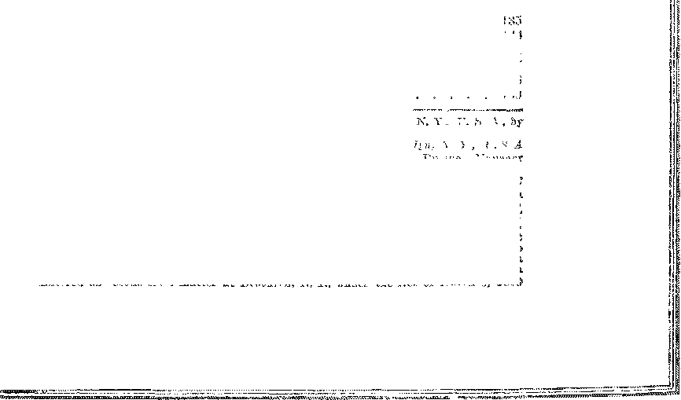
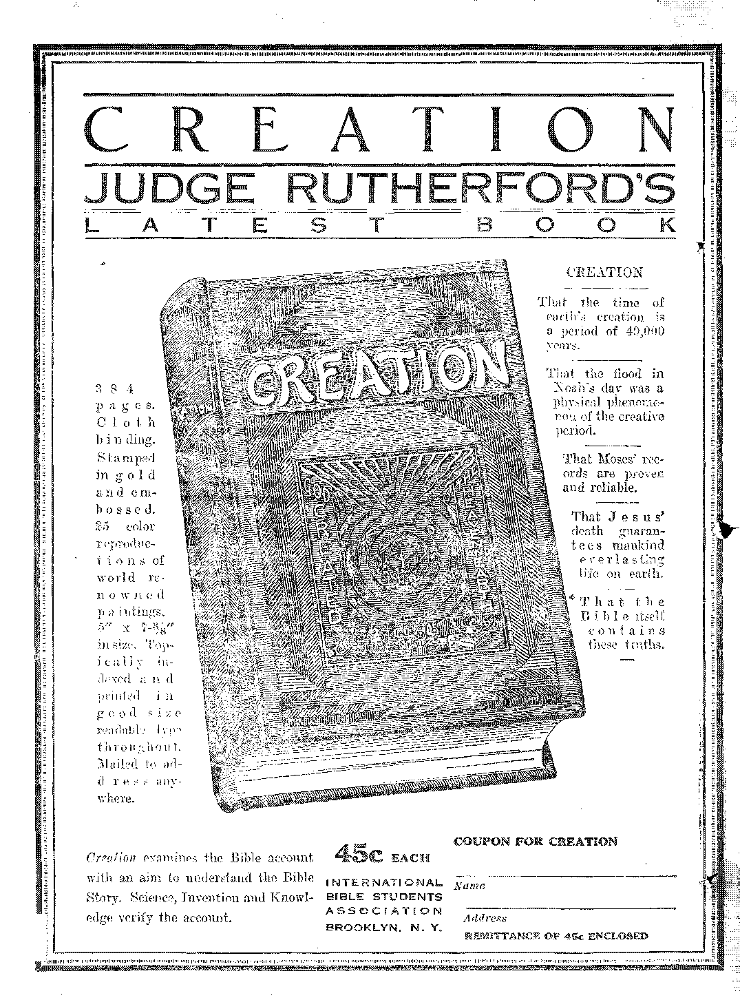

HU
WORLD dying
VW
a Journal of fact liope aiul courage
Vol IX Bi-Weekly No. 214
November 30s 1927
THE STORY OF
UNCLE TOBI’S CABIN
DEVELOPMENT OF
YE KINGDOM
If ■ s ?
KEYS OF DEATH
AND HELL
a-copy ■— $"100 a year
Canada? and. Foreign,-Coun.lries $;;l.50
NEW
BEGINNING*
Social and Educational
Tire Statement of Mr. Bibo, ........
The Story of “Uxclb Tom's Cibin'’ ............ 140
Finan ce —Comvi ite—Than groin aj ion
Rockefeller’s Gift to League . . .
I’a^nger-Cari j mg An plane Routes
The Cost of Selling Goods ....
Thi. American Piorie Loin to bi Ropbui
132
133
131
139
Political—Domestic and I’cipiign
Changes in Light Years in Palfc'tine ........... 131
Judge Campbell Stands for America ........... 132
A Lev, Mohds Awi tWib ................ 137
Home and IIealhl
Fargo's Increased Health ....... ....... 133
Smokers of (igai ettes ................. 134
Cowffivror Vtilis ob White vnu Blov n Silvi ....... 138
Science and Invention
The Much Despised Skim Milk ............. 132
Haive^ier Company Announces Conoi>-Pi(ker ........ J32
Tie Automotive Harvester ............... 132
An Expert WTiittjjtj ........ . ...... 135
Teal el and Mn?li,ia\y
Oni, Thing obAnothjk, . ............... 1"1
An Illephimt Shows Good boime ............. 133
How the Equi*mt Plan Would Work ........... 135
PiELIGlON AND Prill WOl’HY
When Wilt, the Hi whin I > wv the Teeth? . 1 Dll I OPMINT of the KiNinovr ....... Ti f Kins or Dfvth and Hitt, ....... I’hbif Qii-'-ifons and An wins .... . .
\\ iiY t>ii. Lord I/»id I'mn ........
I.lllil SllPkV K>S LlTTlE 1*IOPU. ......
Published
VtOODV.OLIII, HL DC INGS & .MaKPXIS
$1 00 ‘1 Ycie
Foreign Crucss: British . .. .
Australasian
cl Vi't'ON J. ooot orrin .. 1 mtor kobj rt j m artin IL Hl UMNGS o . Soc’y and LCreas.
Ml
Ml M7 1 58
159
inc-s ‘inager
MAj-xD .REMITTANCES TO TIU] GOLDI A(}jg
Notice to ?/sm&rrs; We do not, as a send a card of aeknovJed.,in€nt for a i iu'\ i’ o! lor *i iic\n s iLHCJ tpUcm. A ic-d.d il bltae. (euiung nome of expiation) ■lull be sent v».dL. the touipai one mwth hol<ie the subscription expiiox < i ingo of address v»hci loqutslcd, may be e\pecJM to appear on addiess label m itbra one xnontlu
34 Cut on Tenn.ec\ Lancaster Gate, London W 3 ...... 40 IiVkin \vpdt' Tormyio. Ontano
195 Colhns Street, jTdbomiio, Australia . , , , „ t GI cue Street Cpdg t?v u South Muca
.Enteied as ccond cli-s matte* at Brookh-n, XI., under the Act of M«irch 3, 1879
Volume SX
Brooklyn, N. Y., Wednesday, November 30, 1927
Number 214 •
One Thing or Another
zt Contrast of 1910 and 1927
A STRIKING contrast of l'J10 and 1927 is affoided by the fact that the prespit premium for insurance on jewelry salesmen’s sample trunk's is thirteen and one-half times what it was before the world was made safe for hypocrisy.
Ecuador Follows Mexican Example
THE government of Ecuador, following the example of Mexico, has issued a decree forbidding the entry into that country of all foreign churchmen, irrespective of their religious faiths. The government has recently deported a number of foreign-born priests charged with conspiring against the government.
Flowers Made to Talk
IT SEEMS incredible that flowers can he made to talk, but at the recent electrical show in
New York the sounds which are produced in the plant as it grov s. and as it throws off waste matter, were developed and magnified millions upon millions of times until they roared like thunder.
Increased Attendance at Military Camos "DUSINESS men are taking more and more to ' the idea of military training. From 1921 to the present time the attendance at the summer military camps has increased until now it is four times what it was only six years ago. The attendance this year was 39,676.
Improvement in Sausage Industry
CHEMISTRY has improved the sausage industry by providing sausage casings of shiny, transparent, impalpable cellulose. This will make it unnecessary hereafter to import from China and elsewhere the intestines of hogs, never a desirable addition to the menu of human beings.
Steering the Women Right
TpOLLOAVING the example of the pope the
Seventh Day Adventists norv dictate women's dress. There must be no more bobbed hair, bright colors, rakish hats, earrings, variegated footwear, sleeveless dresses, ultra short skirts, vanity cases, miniature handbags, bright-colored handkerchiefs, dangling pieces of lace, etc. That is, maybe there won’t be.
Chctngcs in Eight Years in Palestine
RABBI a. H. Silver, of Cleveland, Ohio, has just returned after the second of two trips eight years apart to Palestine. Ue sajs: "The changes which I noted over eight years were amazing. From a small, backward Oriental province, Palestine has been transformed into a progressive country wherein modern standards \of life and thought are fast gaining ascendancy.
It is all a remarkable tribute to Jewish enterprise and enthusiasm. Jerusalem now has elec’ trie lights, running water, fine ^boulevards and many autos/’
End of Religious Show Business
THE religions show business as managed by , such figures as Billy Sunday and Aimee ’ Semple McPherson seems in a bad way. The " Federal Council of Churches of Christ in Ameri-' ca has declared against it, having discovered 1 that the membership won by high pressure 5 methods did not stick and having noticed also ■ that the collections were extremely large and ■ the glory went not to the preachers of the home • town but to those from afar. It rather looks as 1 if the tliree-ring-eircus type of evangelism has had its day. No one but the Devil will miss it. 131
The Much Despised Skim Milk
THE much despised skim-milk cheese is now -J- molded into lamp shades, paper cutters, combs, fountain pens, buttons and other objects. Great idea! All a family would need to do to insure against starvation would be to Jay in a large supply of collar buttons and combs. But they would need to have teeth like Towser in order to masticate their food.
Discoveries of Potash in Texas
IN 2IIDLAND County, Texas, drillers have found at about 2,000 feet below the surface vast deposits of potassium sulphate and polyhalite, which may result in making American farmers independent of the European producers of potash fertilizers. The same deposits were found three miles apart, indicating that the beds are of great size.
All Up with America Now
IT IS al? up with America now. After blessing
Cervera’s fleet which went to the bottom of the sea, and blessing the Old Glory and other plaims which went to the same place, the pope has now extended his blessing to the whole American nation. iVe Lave been afraid for a long time that he might do this, and now we know the jig is up. Nothing can save us.
IlcekefellePs Gift to League
yoHN 1). BocKErr.TAJ’.K, Jr., lias made the
League of Nations a gift of $2,000,000, to be med for constructing and endowing the League library. Before making the gift Mr. Rockefeller A said to have consulted the United States government, and to have received assurance that 1i.f action would meet with no objections on the part of the government.
II ho is Doss in .America? '
Floyd E. Thompson, a justice of the Illinois
Supreme Court, recently answered the question as to vlio is boss m America. Ue said: •'Those who would force tyranny upon us want to make us subjects of the Nation. We are not subjects. AVe are the sovereign rulers of the country. Because a measure is adopted and put on the statute books by those who misrepresent ns does not mean that we must obey,” The Judge seems to think that there are a few people in this country who do not know what a real American is, and that they ought to be duly informed.
Harvester Company Announces Cotton-Picker THE mere fact that the International Har--®- vester Company announces a cotton-picker for sale is evidence that the South is in for the greatest change in its history. While only a limited number of the pickers have been made, and they are still regarded as in a semi-experimental stage, they are still sufficiently advanced that their ultimate perfection and general use is assured. One of the machines, operated by two men, will do the work of twenty or mere*'' pickers.
The Automotive Harvester
THE motor-driven combined harvesting and -®~ threshing machine will now harvest and thresh an acre of grain for forty cents. It traverses the field at the rate of two to three miffis an hour, cutting a swath from eight to twenty feet wide. The use of these machines is d;«-placing the migratory labor wfliich in bygone years was a .marked feature of western fife. ■\Vitli their use two men can gather the siran from forty acres in one day. The cost of gathering has been cut from 30q to 15d per 1 mbel by this method. In Kansas a year ago were 8.000 of the combines in operation; Pis year there were 13,000.
Judge Campbell Stands for America
FEDERAL Judge Marcus B. Campbell of
Brooklyn thinkv it is about time for the people of this country to determine whether they live in America or elsewhere; and hence, recently, when prohibition agents brought into court two men charged vhh making hooch in their own homes and vhui Ie found out that t’e officers had invaded tl o Lornes without warra us, he gave orders that th( officers themselves should be arrested and pfficu d on trial charged with entering a priv.de home without a warrant. First thing you know somebodv will wake up in th *<e United States and find to their dismay that this is a land of the free, after all. We are not advocating the manufacture of illegal liquor, or any liquor; hut we do admire the stand of Judge Campbell. Gilt braid and brass buttons give no man the right to make laws. Let the police proceed with what they have to do, but let them do it in a legal manner or not at all. Otherwise, throw them out. Anarchy, disregard of law, is specially detestable in a police officer.
Fargo's Increased Health
TTttVE years ago Fargo, North Dakota, was •T selected as a city in which the Health Commissioner, the public schools, the Red Cross, the Tuberculosis Association, the physicians and the 'dentists should all work together to safeguard the health of the children. As a result Fargo is today in splendid condition. One interesting’ item in this connection is that the city now consumes ten times as much spinach as it did before the test began.
Passenger-Cerryinff Airp'aize Routes
HE passenger-carrymg airplane routes at present operating in the United States are: Dallas to Chicago, 995 miles; Los Angeles to Salt Lake City, 599 miles; Detroit to Cleveland, 155 miles; Los Angeles to Seattle, 1,073 miles; Pueblo to Cheyenne, 200 miles; Seattle to Victoria, 7S miles; San Franc Wo to Chicago, LS94 niiles; Chicago to New York, 718 miles; Louisville to Cleveland, 345 miles; New Orleans to Biloxi, 75 miles.
Why ars are Possible
i.oxzo B. Hoighion, American ambassador to Great Britain explains:
War Com not originate iioin time to time simply in a su'iden and unrontrollable inipul-e. bar is possible because the ma-ws are v filing to fight. But the^e conditions aic thernwhes an integral pait of tile problem. And that i‘--ue, is the outcome of a som of maneuvers bv v huh the masses concerned are hiougbt into pouf ions of oppo-ition. Obrioivdv, this maneaiering is not done bv flic iii.i'-es themselves. The mm< wring is done by little ground of men called government:-.
What Labor Warns ,
ENATOR Johnson of California quotes Samuel Gompers as having well said:
"What does Labor vant? It wants the earth and the fulness thereof. There is nothing too precious, there is nothing too beautiful, too lofty, too ennobling, unless it is within the scope and comprehension of Labor’s aspirations and wants. iWe want more schoolhouses and less jails; more books and less arsenals; more learning and less V vice; more constant work and less crime; more leisure and less greed; more justice and less revenge; in fact more of the opportunities to cultivate our better natures, to make manhood more noble, womanhood more beautiful, and childhood more happy and bright.”
Forty Years a Swindler
AN Iowa Baptist minister has just retired after forty years of service. In his speech after retirement he made the public statement that he did not believe that Moses received the ten commandments at the hand of God on Alt. Sinai. This man is a swindler. See for yourself Mark 9: 9,10. If the Son of God could endorse the laws put forth by Moses as having been given to him by Almighty God, v ho is this Baptist preacher that denies it?
An Elephant Shows Good Sense
IN Philadelphia an experiment was made in the Zoo, endeavoring to find how various animals react to various kinds of music. Classical music was found quieting and soothing. Violins uere quieting: saxophones and trumpets produced irritating effects. When jazz vas played in the vicinity of an elephant, she calmly dipped her trunk into a tank of water, and in disgust blew the water all over the players and put a slop to the irritating noise.
A Problem for Great Minds
FEW years ago hundreds of men wore engaged in the manufacture of five-gallon carboys. These men built homes, maintained families and were consumers of the country ‘s products. Now all the work that was done by all of these men put together is being done by one single machine. The problem for gnaj minds to solve is vhat becomes of the displaced num, and it is not such an insignificant problem as some have tried to make it appear. It is a ,eiil problem.
War Department Delivered the Pun
rpilE whole of America was sbriod v hen a J- little western girl wrote to the War Diyiiit-ment and asked for a baby brother, and it was sorry that the Department could not fill the order. But now the Department lias redeemed itself. A little boy saw the account of tin* little girl’s request. He thought maybe the gid asked for the wrong thing; so he asked for a dog instead. And the happy ending of the story is that in a few days, on orders from the Assistant Secretary of Wary a live Major in full uniform delivered the boy his pup, and claimed that it was one of the happiest moments of his life, ()£ course it was! That is the way to be happy.
Women in Hindu Mines
IN 1922 there were 78,806 worncm working in
Hindu mines, at wages of what amount, in American money, to 12^ per day of eight hours. The British government is demanding that these women he removed from the mines: and the mine owners are horrified, because, they say, it would increase the cost of mining.
The Cost of Selling Goods
THE I), n tmrnri Lhoi>o,niG has compiled from it* libtary data on the co>t* of selling goods in all the principal depaitmuit stoies doing a bus’iKSS of tj-’T.OOO or more per year. The figures show that counting salaries and wages, i-nt, a-b'erri-mm. tares, interest, supplies, traveling, communkations, repairs, insurance, bad drins. (Ic-preci-ition, professional services and urn lasrified item'-. the actual cost of selling goods is tventy-ulne peicent. In addition to tins the rtorelu eper, if he N to live, must add something foi himself and family in the way of profit. This explains vriiy there is such a differmwe between the v. holm ale and me retail prices. There i* no way of avoiding the difference, except to buy at viholes.?Io.
ZZoir the EtjjZt'.st Pion Would Work
HOW the Eoin: nt plan of finance ■would vork in i'eu of tlw present plan, vbieh i» putting all the weal ii of the country into tl e poek-c+s of the Morgen*. Kockc feller.-, du P< nt* and yiollons i* iidei.-'-tiiigiy set down in a ccuple of paragrapl’sin that journal, noni v Irch we quote:
“Say a young num coming of age desiics to go at once into bumiet- that requires some machinery awl Otho? equipment. Ue .trim- a hhi-tral Bank, and gri- a ri ak ho-’-k vrith a ciedit for his de posited note foi a definite peril.si of work. Ilf huy& the materials, he needs with cheeks E*ued against that deposit; and a* he fc<>lls hi* products th" riseriw lie gets thoiefor balance his He has med his own credit
v. iriiord paying iwor cst. As every one world be able to do that, there would he no one willing to pay am interest for the use of the ci edit of ant Ihor or others. No one uould prefer to pay for goods on installment prices rather than cash when they are able to issue their own cash; for their checks would bo as much cash as any money of today, since all cash consists of mere promises, real pay being nothing but human work.
Bishop Gore Executes the Apostles "DISHOP Gore of England has delivered him-■*-* self of the statement, “We are nourishing a vain hope if we suppose that the early chapters of Genesis or the stories about Daniel and Enoch are ever going to be accepted as history,”’ In view of the fact that Jesus Christ mentioned the Prophet Daniel by name as one v hose prophecy is specially noteworthy, and in view of the fact that the Apostle Paul mentioned Adam by name as the fir-t man and Eve as the first wo-*, man, and that Lr+h the apostles Paul and Jude mentioned Enorii with approval, it looks as if the Bishop had ;akni it inion himself to execute at least four of tin- apo--Ues. namely Matthew,. Peter, Paul and Jade and is sei iov.-ly considering the placing m BEhop Gore ahead of Jesus himself. Bishop Gou- is a plain out and out infidel, but unlike Inprsoll be earns his money by the betrayal of tb^ lie is hired to defend.
Smokers of Cigarettes
SMOKEDS or cigavdies spray the d< Iitate tissues of Lead, tin oat and lungs with i-ico~ tiim, ammonia, aerolien, furfurol, caihonmon-oxide, carbolic add, prussic arid and thiiteen other poisons. I’nimio acid is known as the deadliest of dings and is used in the manufacture of military puson gas. Furfurol is the poison in crude whiskey, said to be fifty times as poisonous as oidriaiy alcohol;it causes ataxia, tremors, tv itching, convulsions and pai alysis. Acrolien can«c~ blindness; it is u*ed in the man-ufactuie of muitaiy poison gas. (’aibcmmonox-ide damage* the iM cells of the Mood and causes smoker* to b“.- me 'rinded easily. One drou <?+' cigarette pomon .dll-d a spairow in. seventy seconds: bio (hop* Tiled a snake in thiity secorid*. (’igar^Pes merwork the liv°r, caring (iiahetew hemonhages. destruction of tissue and fatty d« gem rafh>n. me rmvcu.s stun -uffers, the mu*ele* b“o<-n e irmuulom, and tlw Lo-’rt is affected ir.o-t of all. Cigaret.es > ame my * and gill* to fie mmw-. w--i their pm (c of r« n entration, ben .w •aieb-s ano w” 'liable .m a moral m me. The u.-e of tobacco a the presence of infants cav*"* naue"a, vomitinr. ie-desmicss, listlessnes®, los- er appetite and sore eyes. Smoking by women causes the development of ' feminine mustaches, insomnia, rmrvousiiess, yellow complexions end sexual degeneration. The use of tobacco leads to a craving for other drugs and shortens and ruins life.
Five-Cent Fare Sufficient
FTEB a most exhaustive investigation, Samuel Untermeyer has submitted a financial plan which shows that, by recapturing the city-owned subways operated by the Brooklyn Manhattan Transit Company and buying out the Interborough’s investment, New York’s subways can be operated permanently on a five-cent basis, whirfi is what the people want. In time they will show a profit.
Danville’s Cellulose Factory
ANVILLE. Illinois, has the first factory which will have cornstalks as its raw materials. The cornstalks will be made into pure cellulose, from which, in turn, are made rayon silk, photographic film, quick drying varnishes, paper, artificial leather and other products.
Almost Unbelievable Speed
TT IS claimed that when the telegraph receiv--®- ing operators in the new Hearst Publications Building in New” York City receive the word Flash, followed by a story, the plant is so organized that within one minute after the last word has come off the telegraph wire the presses are turning out the finished story. This is acknowledged to be the fastest newspaper production ever devised in any new spaper plant.
OUT in the service work the other Sunday we ran across a remarkably interesting man, a retired contractor, who is now expert whittler to his royal majesty the American citizen and all others who apply. He guarantees to whittle anything anybody wants whittled, and in any shape wanted; and from the samples to be seen in his workroom it is evident that he can make good his offer.
’ For most of the work he uses hickory; but the smallest piece, a squirrel with its tail cunningly arched over its back, was carved out of a peach pit. For $2.50 he will make a pair of hickory shears, with both blades and the rivet all cut out of one piece. The shears are about nine inches long, and it takes a day to make them.
The largest piece is a chain eight feet long, containing sixty links, two drop balls, two fans and one hame strap hook, all cut out of one piece of hickory. For this he wants $50; and it is a safe bet that not another subscriber- of The Golden Age could duplicate it for twenty times that and then some. Please do not write us regarding this.
The workshop contains a variety of nippers, pliers,compasses, cant hooks,grabhooks,swivel hooks, fans, etc., all passing comprehension how anybody could ever cut them so skilfully out of one piece of wood. Just now the whittler is reading the Harp, the Deliverance and several of the booklets; and we hope he enjoys them and gets at least half the blessings out of them that such an honest and conscientious workman deserves.
UESTION: Jf knowledge is necessary before one can he placed on trial for everlasting I’.fe rvheii will the heathen come to an understanding of the truth?
Answer: The heathen will come to a knowledge of the truth after they are awakened from the graves in the kingdom. By far the majority of humanity have gone down to the grave without coining to a knowledge of the truth. They ^can not learn of the truth while dead in the tomb; for in Ecclesiastes 9:5 we read: “The dead know not anything.” In Ecclesiastes 9:10 we read: “There is no work, nor device, nor knowledge, nor wisdom in the grave, whither thou goest.” While the dead are truly dead, Jesus premised a resurrection of flic dead; and He said that they would come forth from the grave. In Jolin 5: 28, 29 we read, “Marvel not at ibis: for the hour is coming, in the which all that are in the graves shall hear his voice [the voice of the Son of man], and shall come forth; they that have done good unto the resurrection of life; and they that have done evil, unto the resurrection of [Greek, Crisis'] trial or judgment.” All except those who have done good will be awakened for the purpose of placing them on trial by giving them a knowledge of the truth and testing them for a period of time; the faithful of these will be granted life everlasting upon this planet earth in the kingdom.
Love’s Symphony By Garland West
T OVE was journeying along the great Way of Life. She had not gone far till she came to what appeared to be a woman sitting in a disconsolate attitude upon the roadside. I say appeared to be, because so utterly crushed and inert did the figure seem that Love was obliged to look twice to make sure that it was a real, living, flesh and blood creature and not some natural object of the way. Then she whose mission. it was to assist the sorrowing and downfallen drew near, laid her’ hand upon the other, and said:
“Who art thou? And why dost thou sit here while the day is fair and many travel on toward the city of the Consummated Life T3
At the gentle touch and the 'kindly voice, the seemingly lifeless one stirred, raised her hand, and beheld the soul of Love beaming upon her. Tears filled her eyes and with faltering utterance she made leply:
“Alas! My name now is Despair. For me the journey is done; and I am doomed to perish here, desolate and rmcoHsolwh But who art thou? And vliy dost thou thus question me! A multitude, indeed. Lave passed this way: but not one hath yet addressed me save thyself. Even Hope and Faith went by and came not near me?
And Love made answer: “Uy sisters Faith and Hope might indeed have helped thee; but as they have failed, I also bear a charm, to the potency of v.hieh many can testify and which way also avail to alleviate ihy distress.”
Then said Despair: “You see those leaden shoes upon my feet, ku enemy hath placed them there while I slept. They verily drag me down to the earth, and my soul ckaveth even unto the dust.’’
Now of the mens each bore s mine; cut was stamped Adversity, and the other bore tlrn mark Disco uro gmieii t.
Then Love stooped down and kissed the troubled brow; and lo, the bcaw Biocs fleD off from, the weary feet of the unhappy one, the pall of gloom left her countenance, and sho "tood up eioc-t in 'Lor neve self.
"Thy name.’’ said Love, “is no longer Despair but Courage; and th<m shalt be a blessing and shalt prevail.’’
Then Love departed from Courage, leaving her to rejoice in renewed hope and in the wonderful transformation that had been wrought in her.
Now as Love went on, she passed scores of wayfarers and bestowed ever a smile and a word of cheer, After a while she overtook Failure; for he was a slow walker, and the wonder was that he had come thus far on his journey. Love knew him because his name was written on him, both before and behind. As she drew near him he leaned against a milestone and, bewailing his lot, declared that he could go no farther. But Love caught him by the hand and said, “Courage.” *-
He answered: “It is not for me. All the v, rrfd knows that I am Failure, and despises me. Even my friends and relatives have scorned and trampled me in tl e mire. What can I do?”
And Love said: “Henceforth thy name is Experience, and thou, must wear this token and shalt succeed.” So she gave him a token to wear above his heart and walked with him upon the road; and. he lifted up his voice and ble^cd her. and gave thanks to God.
Love also fell in with Lacking-in-Faith. This person suffered from sheer debility and moved forward in a feeble sort of way.
“Shall I assist you?” asked Love. And without waiting for a reply, she caught his arm and smiled, with such light of joy that he saw the sun shine and drew its golden fruitage into hi* heart; for Love breathed into his ear those divine promises which are bread and meat and springing waters to the thirsting soul. Lacking-iii-Faith. was changed, and knew not lumsclf for w^at he had been, but for one now renewed and in contact with the source of strength.
And on the 'Way cf Life Love met u;any sad ones who had suffered much because that for them the way bed been bard, bringing pain and more tears than so iks. Love met young men and maidens robbed of their beauty of form by, fell diseases, children of early pais deprived of paiental care by the hand cf death, old men for whom the journey would soon be as a talc that is told. Many others did Love meet, and those who listened to her voice were sustained and cheered.
Then from a mighty summit of the way Love looked down and back and far along the road and beheld the toiling, straining mass of humanity," organic, conscious, breathing things that sought to live and strove to win some modicum of what the world calls gain. And many a groan was heard. There were curses, too, and blows; and
then it was that Love’s tears rained upon the earth and her glorious head was bowed in grief.
Then Love turned her back upon the scene and looked into the valley from the mountainside. Here she saw the world as it will be -when the years of privation and -woe have died away. She beheld the emancipation of the 'whole earth. She heard the hallelujah chorus of all humanity. She saw the wondrous and mighty fruitage of experience. She heard no more the groans or the sound of blows. Instead thereof she heard the voice of thanksgiving. She saw the Land o£ Love freely and generously extended. She saw the banner of the King of Love floating over a world that basked in the joyousness of an effulgent peace.
Then Love was glad that she had been privileged to be of some practical service in the world. She was glad that her symphony had been Love.
rPHE Locomotive Engineers’ Journal contains A an illuminating article by Arthur Ponsonby, M. P., British Under-Secretary of State for Foreign Affairs in the recent Labor government. 31 v. Ponsonby’s whole life has been spent in the field of diplomacy, and he knows whereof he sjv aks.
It seems that if Germany had not marched through Belgium, France would have done so. It wa» part of the French war plans. It also t-t <mis that the Kaiser never made the reference regarding Biitairis "contemptible little army5’. The phrase was invented by a British army officer. As a matter of fact, the Kaiser used to v arn his subjects against underestimating the sirength of the British army.
In Bedford Park, England, is a sun captured b\ the Bedford regiment at Gallipoli, where hundreds of thousands of British soldiers lost their lives. On one side of the cannon is a tablet recording the deed of bravery and on the other ?>d> is the name of the British firm “Armsti ong, Whitwcrrh & Co.” that made the cannon and sold it to the Turks.
The armament makers keep agents in every country. Whenever business falls off, they run scare ai tides in the papers so as to stimulate business. This is done for the same reason that certain medical hoards of health run scare articles now and then regarding smallpox epidemics,- etc. They wish a market for the surplus ■^vaccines and serums uhich otherwise they could - not market. The reason why the Chinese have been fighting among themselves now for several years is that the surplus stock of war material left from the World War was disposed of in China for that very purpose.
In the city of Sheffield, England, one great; armament factory is making twelve and fourteen inch shells for Japan and the United States. Mr. Ponsonby says significantly, “When the United States inspector comes around, the Japanese stuff is screened off; and when the Japanese inspector comes around, the United States shells are screened off.”
Mr. Ponsonby reiterates that half an hour after the next war is declared a rain of three hundred tons of bombs per day v ill fall on every large city in England, and that civilization as we have known it will pass away.
Knowles Stirs Things Up
T THE Wiiliamstovn Institute of Politics floiace G. Knov lo-s stirred things considerably when he said, as reported: “We have imposed our force upon v eak, helpless and defenceless countries and slaughtered thousands o£ their citizens. We have attacked them when they expected we would defend them. We have used the Monroe Doctrine to prevent sympathetic European nations gomg to their rescue when we abused them. Instead of sending thoip teachers, instriw-tors and helpers we have sent them concession hunters, conscienceless and usurious bankers, avaricious financiers, bribers, commercial tricksters, murderers, soldiers, degenerates and carriers of infectious diseases. Instead ofi our trying to elevate and make their people better and more patriotic, we have made crooks and traitors of many of them in order that our unscrupulous bankers and capitalists and Washington can control the government and affairs of their countries.” All we can say is that Mr. Knowles has remarkable courage.
ORDINARILY brown sugar is regarded as an inferior product. Because white sugar is sweet and agreeable in taste it is supposed to possess equal food value to brown sugar. Many of The Golden Age readers are familiar with the reports by Alfred W. McCann on the deficiency of white sugar in food value in tests of actual use. All that Mr. McCann has shown and more is found in the following radio test.
That the reader may comprehend a radio test we will observe that all recognize their favorite radio station by a meter number, say 275, and a different station by a different meter number, say 41,6. The dial that measures and indicates on a dial these differences in stations merely determines the differences of vibratory resistance. As you turn the dial the radio energy “comes through’’ and is recorded on your ear as music or lecture^.
Instruments employing the identical principle are now in practical use recording the vibratory radio difference between substances, foods, and as veil the different organs of the body, their functions and conditions ol” vital energy and even disease vibrations. These differences can as easily be expressed in numbers on a radio dial as can the different radio stations on the air.
The writer spent a short time in such a thoroughly equipped radio laboratory, and was delighted to see how accurately and with comparative ease such radio analysis was accomplished from actual samples of brown sugar and white sugar.
The radio equipment used was both a receiving set and a broadcasting set, and the numbers measuring the units were the ordinary “resistance box” dials so well known in any measure of radio resistance.
First, the instrument was set to record ths numhcT indicating the radio resistance of any human rate. It may not be generally known that the art of -writing with a pencil on white paper records all the radio vibrations of al! kinds in one’s body. But this was unquestionably proven in this highly sensitive instrument and its receiving instrument, called the Streborcam, invented by a South Dakota scientist, Dr. McRoberts.
A bit of this handwriting placed in the broadcasting instrument called a Dynamizer, conveyed the radio vibrations of my body, and was measured in the resistance boxes containing the dials, the evidence that radio contact was “going through” being proven by the contact of the operator’s fingers on the simple bar of bakelite about four inches wide and about two feet in length.
There is no peradventure about this evidence of radio contact. There is no radio energy going through except it is actually in evidence. The person listening in on the radio has but one sense, hearing, to tell him that radio energy is going through; but the radio laboratory operator has two senses to tell him that radio energy is in evidence: He both feels the pull of the radio contact or positive energy, and sees that his finger tip firmly adheres to the bakelite surface. Nor is this evidence subject to inference, it is even more positive than the evidence on your radio that you have the station for which you are tuning in.
First the relative food value to myself of the samples of white sugar and brown sugar were tried and indicated with the following amazing results:
|
Food |
Food | ||||
|
sub stance |
White |
Brown |
substance |
White Brew a | |
|
Carbon |
99 |
650 |
Magnesia Potassium |
1/10 of 1 11 |
870 810 |
|
lame |
22 |
840 |
Silicon |
1/100 |
880 |
|
Iodine |
1 |
870 |
Sulphur |
1/10 of 1 |
940 |
|
Iron |
1 |
880 |
Sodium. |
0 |
8i0 |
The instrument showed the normal function rate of kidneys 34. Use of white sugar would reduce to 20. Use of brown sugar maintained normal condition.
My actual weight is 157, normal weight 159. Use of uhite sugar over stimulating function of pancreas would raise my weight to 189 at loss to vitality of medulla, liver and pancreas.
Radio test of the body has recently discovered endocrine or vitalizing glands in parts of llie body that the anatomist never suspected uere endocrine glands. Few if any except radio laboratory diagnosticians have as yet discovered that the heart, the eye and the carotid glands are endocrine glands. Any radio laboratory will be interested in making this test.
Other organs of the body not suspected to operate as endocrine glands prove under the exactness of a sensitive instxmment to possess a hitherto unsuspected function. The reason why this was not discovered before is that the instruments like the radio instrument in process of
perfecting varied in their power to catch and record the finer radio vibrations.
The endocrine glands, when normal, are 62 in this test. The use of white sugar reduces this very important vitalizing function to only 12. The use of brown sugar maintains it in normal function at 64.
Observing the almost universal use of white sugar, can you possibly question that through COMMERCIALISM the out-going “god of this eWorld”, who is about to be forcibly dethroned, has had design in the general use of while sugar in the thousands of commercial products called “food”?
Will the incoming King of righteousness withhold the knowledge of matters of this nature? Doubtless our radio knowledge is yet in its earliest infancy; and complete and. greatly simplified methods will soon be employed. That the principles are now being employed plainly indicates the presence of the King and of the kingdom.
THERE was a time when the American people loved to be humbugged, but they are a long way past that now. They have risen to greater heights. They love to be robbed. There is no other way of explaining their blind confidence in the newspapers that labor incessantly to convince them that they should own nothing but that Big Business should own everything.
Take the matter of electric light and power h'lls. The city of Toronto, Canada, pays annually light and power bills in the sum of $9,670,434. If chat same city were located on the lines of the Caio]ma Light and Power Company, that same service would cost the people of Toronto $38,681,736.
Toi onto brings its power ninety miles. Asheville's tremendous water power is right at the 'door. Toronto pays all that it costs; namely, 1.7 cents per kilowatt hour. Asheville pays from 6 to 8 cents, averaging about 6| cents. Duke’s tobacco money Las come back to the Carolinas as a cuise.
3Vho gets the difference? Bankers, financiers, statesmen, leading citizens, newspaper men, etc. Why do they get it? Because they want it, or think they do. Does it pay them to rob the public and then lie the public into thinking that it is all for the best, all for the good of the country? They think so. But in the end it will be found that they are mistaken. There is an end to every crooked road.
Does any one suppose that the Lord is going to allow’ a bunch of thieves to appropriate to themselves and to divide among themselves all the good things that He has designed for the blessing of His own earthly creatures; and that there will never be a day of settlement?
Even the old crooked dishonest motto that “Honesty is the best policy” would suggest a wiser course than Big Business is following in the United States at this time. But. like the Big Preachers, and like the Big Statesmen, it is quite impossible for Big Business to ever really learn any moral lesson. The only way with a blind and obstinate horse is to let it rim as fast as it likes till it breaks its oiui neck.
Fr. \vk J. Bvrke. former Smiler of Weighls and Measures of the city of Brockton. Mass., was so close to the scene of the pajroll holdup foi Vvhiri’i Sazco and Vanzetti were slain that when tlin ear beating the murdc xers pt»s«ed him one of the wen called him a vile name and snapped a revolver at Ifm. Buiko obtained a clear ■xview of the tv o men in the murder car. He made an effort to trail the car. but his car would not start; made an effort to got the Brockton Police headquaiters, but the phone did not answer. He finally notnUd an editor of what he had seen. "When Sacco and Vanzetti were arrested he called at the Police Station, saw the prisoners and stated positively to the marshal that these uere not the men in the murder ear. Strangely enough, this important witness v,as ignored by the State of Massachusetts, when making up tliiui case against the two men. Ue testified al the triad in the interest of the two prisoners. He could not do otherwise and keep from being a TOuidmer. Mr. Burke is evidently an honest man, and still insists, after seven years, that Sacco and Vanzetti are not the men who were guilt}' of the murder in South Brahitece.
FROM a recently published hook, “Trumpets of Jubilee,” and from other sources in the Library of Congress I gleaned the following information respecting the origin and effect of the story which caused the Civil 'War:
“The false impression of the condition of the Southern slave created by ‘Uncle Tom's Cabin’ encouraged Brown to believe that.,. the negroes would rise and massacre their masters; and he laid a plan to arouse them to take this step. . . . The negroes, however, did not join the con-spiiators, as had been expected.”
The same writer says further that, the hoot: was misleading but strongly-written story”, and was “one of the powerful agents in arousing against slavery the passions of the North. . . . It. was condemned in the South and by the conservative element of the North, yet a great many Noithern people professed to believe that the book gave a true picture of Southern life. . . . It is probable that this book did more than anything else to increase the feeling of the North against slavery.”
Let us remember that the world had not only entered the time of the end, and. had been in it for half a century, at the time the volume was given to the masses, hut we were also in. the midst of increasing spirit activity, as predicted by the apostle.—Eph. 6:10-13; 2 Thess. 2:9.
In harmony with this, the Fox sisters had startled New England by their “table rappings” in 1848; Horace Greeley gave ample space to their writings on spirit phenomena in his Tub-•line; and the Davenport brothers were astonishing the people with their strange exhibitions.
Thousands were falling a prey to these deceptions, and the word “medium” was rapidly becoming a household word. It was not surprising, therefore, that one of Mi s. Stowe’s temperament should come under the same evil influence; and this is exactly what happened, as is abun-danih proven by what follows.
Mrs. Stowe was the sister of Henry Ward Beeehei, the noted preacher. Among other things, she says of herself that “thought, intense, emotional thought” vas with her “a disease”; and that sho was “the slave and sport of morbid feeling and unreasonable prejudice”. She “felt and thought with such absorbing intensity that her mind rvas exhausted and she seemed sinking into a dcadness”. “About half of my time I am. scarcely alive.” she once declared.
Miss Beecher married Calvin Stowe, who “entertained phantoms, his visions, as he called them. . . . Since his earliest childhood they had appeared before him, emerging from the unlikely background of the homely puritan village of Natick, Mass., where he was born. It had been years before he had realized that they were not as tangible as the persons about him, and he saw them with pride and pleasure to the end of his life. Their talk, which was silent, shook him profoundly, as did the playing of their musical instruments, which he alwajs heard. They came into view through the walls or furniture, lovely landscapes often lay about them; they enacted little dramas over and over again, without variation, in a thrilling rhythm. Indians were among their number, who played viols and fiddles. . . . Most of these ghostly visitants had no counterparts in life; but occasionally men and women whom he detested would swim, before him in pleasant guises, while persons whom he loved would be terribly torn, blackened or shriveled by funnel shaped clouds. Once as a child he had awakened to discover in his bed. an ashy-blue skeleton, which seemed to him entirely palpable.”
These demon manifestations were remarkable in their abundance and persistence; but history affords not a few parallels of a somewhat similar character. They bring to memory at once the visions of Swedenborg, Dante, Loyola, and many others who wire worked upon, by the evil spirits and inspired to write voluminous records regarding their experiences. Through her husband, Mrs. Stowe undoubtedly was strongly influenced by these vicked spirits; and this was doubtless Satan's object in effecting their union in marriage.
The author of “Unde Tom's Cabin” received a thorough training from her husband in the art of coloring her narrative, ve are told, “writing in the midst of gingerbread and baked beans in the kitchen, and a baby at her feet”; for she was a writer of some note before she attempted this work.
We read that she was impulsive in her literary efforts, caring little for facts, and never taking time to even cursorily investigate her chosen subject. She was rash and bent upon making her point at all hazards, usually writing from the standpoint of a preconceived opinion. “Absence and wandering of mind” was “a physical
infinnity”. Her memory was unreliable; and she often contradicted herself, but refused io correct the most glaring inconsistencies of statement.
Once she visited Dr, Hohnes with a manuscript, but frankly told him that she did not want his opinion, since her mind was already “made up”; but she thought that he might suggest improvements in the phraseology. “In many years of her life the author avoided, all reading upon or allusion to the subject of slavery,” believing that no one could understand it It was “a passing phantasmagoria”.
Once her husband and her brother assisted an escaping slave along the “underground railway”, and on another occasion she visited for a few hours a plantation in Kentucky. But, save for stories told her by colored women who often helped her with her work in the household, this was the extent of her contact with the institution. During the Birney riots in Cincinnati “she was concerned not with the issue of Slavery, but with that of free speech”.
In 1857 the Stowes moved to Brunswick, Me.; and shortly thereafter she was “stirred by letters from Mi*s. Edrvard Beecher, of Boston, urging her to "write something on the subject”. “She hogan without plan or premonition, breaking into ecstasies of ‘tears as she wrote.” Her hasty installments appeared in The National Era. She “judged the whole by a piece”, and the story v. as overcolored to the last degree. It was merely a sweeping indictment and a hysterical outcry against the institution.
The country was set on fire when the story Intel’ appeared in book form. It was a time when men gave loose rein to their emotions, thought intensely, find talked with a reckless abandon. Then came “'The Key”, another volume of hearsay, without documentary proofs. It unlocked nothing.
We know that the days of divine inspiration are over. They ended when John gave to the church a record of the wonderful visions on Patinos. But Satan has at intervals thrust upon the world during the centuries following works claiming divine origin. A good modern example is Mrs. Eddy's “Science and Health, with Key to the Scriptures". Not one single book of the Bible was written by a woman.
As to the unseen origin of Mrs. Stowe’s book, believed by her and her friends to have been inspired, we will allow her to convict herself by her own confession: “The scene [a vision] presented itself to her mind while she was seated at the communion table in the little ehureh at Brunswick. She was perfectly overcome by it, and could scarcely restrain the convulsion of tears and sobbing which shook her frame.” She often used the third person in referring to herself.
After she had completed the book, she admitted her belief that it was the product of “‘an unknown power”, stating that this unseen force was “something uncontrollable”; that it continued to control her throughout her effort ami ultimately left her exhausted.
We quote again: “Mrs. Stowe felt here if :-o possessed that she became the conscious agent of a power other than her own. The story can less be said to have been composed by her than imposed upon her.” (Italics are ours.) “‘Uncle Tom’s Cabin’ is a work of religion; God wrote it,” she averred. But some of her contemporaries pronounced it the work of Satan ; and they were quite right.
Of course, God permitted the work to be written, and has or will overrule it for ultimate good, as a part of the general permission of evil; hut He was not the author of it, because He is “no+ the author of confusion, but- of peace”, and tempts no man to do evil.
The volume was issued at a time when conditions were ripe for its reception. It was the “psychological moment” for Satan to accomplish his long-cherished design to disrupt the Union, his ultimate purpose being to throttle liheifj in America and frustrate an important part of God’s plan.
Centuries before, anticipating the settlement of North America by a liberty-loving people, and the founding of a government favorable to enlightenment, Satan had sought to forestall it through the voyages of Columbus and the resulting effort to people it with Spaniards and other backward races under the influence of Home. This undertaking failed.
Grandly God’s plan went forward, and in due time the nucleus of a new nation appeared along the North Atlantic coast. Satan -was dismayed, and inspired a tyrannical ruler to cruelly oppress the colonies, in the hope that the torch of freedom, then burning so brightly, would be extinguished.
Again, failure attended his efforts; the colonies revolted, and he tried the harsher means of subjugation by war. But Jehovah raised up a Washington, through whose instrumentality He overruled the anger of men and devils for good, and “brought forth on this continent a nation conceived in liberty, and dedicated to the proposition that all men are created equal”.
God's plan provided that America should he, in a peculiar sense, the workshop and experimental laLoiatory of the time of the end; and accordingly, tiom this central source lie has di.>-tribnted His chief blessings of the millennial daw n poi iod. 1 leuce, His favor has rested upon this c-nuw'iy I'com the first in a very special sense. Il has bf-ui. indeed, "the land shadowed with vines,'’ providential protection. This, therefoie, recounts for the repeated attempts of Satan to destroy its institutions.
Nothing daunted by bis defeat, Satan tried to mislead the framers of the Constitution by suggesting through his agents the formation of three republics, or one with three presidents; but wiser counsel prevailed, and he was disappointed. Filially, he achieved, a triumph when slavery was made constitutional; and from that time forward he lost no opportunity to stir up sectional hostility and create crises in Congress.
Satan's first chance came in 1820, when Missouri applied for admission into the Union. Previously, the states had been admitted “somewhat in pairs; first, one from the South, and then one from the North” in order to prevent trouble; but a dangerous crisis was precipitated when Satan endeavored to have two Southern states received in succession. Alabama had been admitted when Missouri knocked at the door with a constitution legalizing slavery. This angered the North, and war seemed imminent. It was only averted by the “Missouri Compromise” introduced by Henry Clay, and the final struggle was deferred for three decades. Again Satan was foiled. A Clay had been provided for the emergency. Thenceforward he became known as "the Great Pacificator”.
In 1832 a tariff bill inimical to Southern interests was passed, and South Carolina threatened secession. If Buchanan had been president, a “Southern Confederacy” would have resulted; hut the Lord had permitted Jackson to occupy the office at this juncture, and the influence of Calhoun and Hayne was offset by
Clay and Webster. The president made known his determination to use armed force to preserve the Union, and Clay secured the passage of a “Compromise Tariff”. South Carolina then repealed the “Nullification Ordinance’’. Satan was again defeated.
Encouraged by his near success, the Devil instituted a double program, that of slavery agitation through the Abolition societies, churches, clergy, newspapers, etc., and by harassing Congress with petitions and documents from all *■ quarters. Crisis after crisis resulted. Satan well knew that if Congress could be induced to abolish slavery, war would result. Therefore that body was flooded with abolition petitions.
In order to settle the matter, six resolutions affirming the constitutionality of slavery and “the inability of Congress to abolish” it, were passed in 1838. The Libeiatoi, published by Garrison, demanded “immediate emancipation"; and the Constitution was denounced as "an agreement with death and a covenant with hell”. Negro insurrections occurred, and many white people were murdered. Calhoun sought to stop the agitation in 1836 with “the Gag Law”, forbidding the reception of .petitions; but the measure was killed in the Senate.
Matters were further complicated by the annexation of Texas in 1836 and by the Mexican War in 1846. The sentiment agaiimt slavery was stronger than ever. More than two thousand newspapers carried information everywhere and the greatest word-battle in history was in progress
Crude, slow-moving trains crawled through the land, in fulfilment of prophecy. Stormy an I prolonged debates occupied both houses of Congress, and Clay and Webster pleaded for peace and harmony. The admission of California as a free state was hotly contested. With the pas -age of the "Omnibus Bill" the work of Clay and Webster was ended, and they died. Thore was, therefore, no Clay to introduce compiomues awl and no Webster to raise his voice amvimt secession when the Lour struck.
In J854 Congress parsed the "Kansas-Nebraska Bill”, which poriuittod these territories to ole-cide for themselves the question of “slavery or no slavery”. This transferred the struggle from Congress to the people, and civil strife at once resulted. The fighting lasted several years; but the anti-slavery faction finally won.
The Dred Scott decision widened the breach, and the two sections now glared at each other like tigers. The clouds of war were rapidly gathering; fitful lightning flashes and the roll of thunder gave warning of the great storm which was soon to break in all its terrible fury.
Providence permitted a split in the Democratic ranks, which insured the election of Lincoln, God's chosen instrument in saving- the Union. Secession resulted, and the war came.
*-After repeated failures, the Devil had finally accomplished his purpose through the agency of a well-meaning, but misguided woman.
After the publication of ’‘Uncle Tom's Cabin'’ w ar was inevitable. It soon came in a torrential downpour; and its author immediately became a world figure, for a time overshadowing that of Lincoln. She was received in Europe by crowned heads, and her foreign tour became a pageart. •She was idolized by the women of Europe, and presented with a monster petition of twenty-six folio volumes, urging abolition.
She meddled in everything, issued scores of pamphlets, entered into the -hick of the Kansas-Nebraska discussion, consulted mediums and freely dipped into spirit writings. She met Mrs.
Browning while in Europe, a "convinced spirit-nah st”; and we read that "these two sister souls were wafted together on a faint and lovely sea of emotion'’. They exchanged letters on the subject for many years.
In her correspondence with George Eliot she "poured out a flood of evidence’’, telling about "communications” which she had received from the spirit world. Once she was mistaken by her husband for a "phantom”. "She had in truth the look of a trance-walker. Her air of vague absorption had become an incorrigible habit.”
’When the Avar came, her friends told her that it was her war. "She had an augmented sense of divine appointment,” and "presently she decided that Lincoln was too slow". Accordingly, she "hastened to Washington to offer him advice"’.
Lincoln was sorely beset by many evangels; but he received her gravely, with the significant remark, "So you're the little woman who madc tbis great var.” Although very talkative and versatile, she left no record of the conversation which followed! Evidently, she was no match for the great Emancipator.
IT IS only ninety years since the pillory passed out of use in England. Pillories were commonly creeled in tlr> center of the town, usually near the village church. The offender had to stand with his bead and hands through Holes in the bar, all clamped at the ram*' Im el, an extremely painful posture. O'wasionally the ears were cur off by tho-'o gentle men from whom we received our parentage 11 d our idmis m justice and mercy.
"We are wore iwreiful: sometimes, it would Svein, almost too much so. Ar Jmh-t tlwie v.we M'Vhi murder* re. Three times they sr.cc^* Wd in breaking out <«£ prison. On each occasion <ne officer of th* law, either a warden or a mliec-was shot and killed: and on each occasion one murderer escaped and has not since been found. On a fourth, attempt one of the murderers vas himself slain. Now there are hut three of the murderers left awaiting execution.
Evidently in the above cas^c justice be® been too long delayed. And yet we cannot affoid the other extreme, either. Two white men met two colored men in a road in Mississippi. Strife follow* d. and one of the white men was killed. No inquiry was made as to iho cause of the s’rife. A mob of a thousand white men, women and children gathered and burned the two colored men at the stake. This happened in Jo1. 1927.
Vfihvn sanity comes, as it xxlll surely come with II e establishment of the Lord's kingdom, v.Lat " ill the people of that happy time think of the so-called civilization of our day and of dm wi-oiif past? What will they think of the Vw-rld War among the so-called Christian people of the world? They will ask, How is it possible that those poor unfortunates could look forward so hopefully to a future heli when thQy already had as bad a one as the Devil could possibly manufacture I
Development of the Kingdom
[BroarteaM from Station WBBR, New
MUCH misunderstanding among the people exists concerning the development of God’s kingdom which shall bless the nations of the earth. Such misunderstanding is due to the deceit practised upon them by Satan and his emissaries. **
There is but one church, and that is the body of Christ. Those who come into Christ by adoption will ultimately he of the great empire upon condition that they prove faithful to God unto the end. To such Jesus said: “Be thou faithful unto death, and I will give thee the crown of life.’’ ‘And thou shalt sit with me on my throne.’ —Revelation 2:10; 3: 21.
In order to corrupt the ehurc-h Satan set about to turn the mind of Christians away from these and similar promises, and prepared various religious systems into which to draw the orderloving people who desire to serve God, and which systems call themselves by the name of Christ. It must he apparent to all thinking persons that the Lord would not have many organizations when there is but one Christ. It is well known that there are hundreds of denominational systems claiming to be Christian, the doctrines taught by each being in conflict and resulting' in confusion. It should be easily seen that God is not the author of such confusion, hut that these systems have been organized and used by the enemy for his purposes. The real purpose of a Christian on the earth is to be a witness to the name of God and Ills kingdom, and by being faithful in this respect to prepare himself for the kingdom. The leaders of denominational systems have an entirely different idea about the purpose of a Christis n.
These various denominations have deemed it their business and commission to convert the world, and therefore think it necessary to bring into their denominations the rich and the influential. They have opened the doors to such and have made them the principal ones of their flocks. They have organized the clergy, as distinguished from the laity; and these clergy meet in councils and synods, and control the system or denomination, and use it for political purposes. They make themselves a part of the world, and claim that their denominations constitute God’s kingdom on earth.
Speaking to such James says: “Ye adulterers and adulteresses, know ye not that the friend-
York, by Judge Rutherford]
of the world is enmity with God? whosoever therefore will be a friend of the -world, is the enemy of God.” (James 4:4) The word adulterer here used does not refer to a lack of chastity” between the sexes, but it means an illicit relationship between church and state. It means that these ecclesiastical systems have made friendship with the world and have entered into an alliance with the commercial and political powers of the world; and altogether they con-x stitute the visible part of Satan’s organization, which is designated in the Scriptures under the title and symbol of “beast”.
And now in more modern times these ecclesiastical systems, claiming to represent the Lord, are presided over by a class of clergymen who call themselves Modernists. It is admitted that the Modernists are in the majority in numbers among the clergymen. A Modernist is one who denies the Biblical account of man’s creation, denies man’s deflection and sentence to death, denies the great ransom sacrifice and, of necessity, denies the Lord’s kingdom.
God foreknew that the ecclesiastical systems, Catholic and Protestant, in the name of Christ would be overreached by the Devil and used for his purposes, as a part of his organization. Through His prophet Jeremiah He slated: “Yet I had planted thee a noble vine, wholly a right seed; how then art thou turned into the degenerate plant of a strange vine unto me? For though thou wash thee with nitre, and take thee much soap, yet thine iniquity is marked before me, saith the Lord God. How cans! thou say, I am not polluted, I have not gone after Baalim [the Devil]? See thy way in the valley, know what thou hast done: thou art a swift dromedary traversing her ways; a -wild ass used to the wilderness, that snuffeth up the wind at her ifleasure; in her occasion who can turn her away? all they that seek her will not weary themselves; in her month they shall find her. Withhold thy foot from being unshod, and thy throat from thirst: but thou saidst, There is no hope: no; for I have loved strangers, and after them will I go.”—Jeremiah 2: 21-25.
The prophet here shows, in harmony with the facts as we see them, that ecclesiastic! sm has turned into the degenerate plant of a strange vine, that she has become polluted, that she has gone after Baalim, the Devil religion; that she has been in the valley, between the political and financial elements of the Devil's organization; and, like the characteristic trait of a dromedary or a wild ass, she illicitly runs after the ultrarich and the ultra-influential, that she might have the plaudits of men. and the honor that the world could bring to her. Ecclesiastieism did not get this from the Lord God, but it was the result of falling under the influence of Satan the Devil.
m
Temptation
HE term “ecclesiastieism” applies to all denominations, Catholic and Protestant, which
have united with the financial and political elements of the earth to form the governing or controlling factors to rule the world. To these ecdes’ast’cs the Devil presented the three great tempi aliens. These temptations he also presented to Eve. She yielded and fell. The same three temptations were presented to Jesus by the Devil; but Ee resisted all of them, and gained the victory. And now mark how they were presented to the ecclesiastical systems, and how these have all fallen to the wiles of the Devil and have become a part of his organization.—2 Corinthians 4: 3, 4; James 4 : 4.
The Scriptures declare that God does not tempt any one. “Let no man say when he is tempted. I am tempted of God: for God cannot be templed with evil, neither tempteth he any man: but every man is tempted, v. lien he is drawm away of his own lu«t, and enticed, Thmi when lust hath conceived, it bnngeth forth sin: and sin, when it m finished, bringeth forth death.” (James 1:13 15) It was the desire of these ecclesiastical leaders for honor and pov er that led them into temptation.
Jesus (’hriist is the great Shepherd of the flock of God. (Hebrews 13: 20: 1 Peter 2: 25) In the organization of the church the Lord provided for under-shepherds, designating.them as elders and teachers. Upon these is enjoined the duty and obligation of feeding the flock of God, to unselfishly look well to the interest of such (1 Peter 5:2-4), and not to lord it over the people of the Lord. Contrary to the Word of Ged, X the elders or shepherds of the denominational churches organized councils, synods, presbyteries, and like bodies politic, elected their owm members to the high offices of popes, cardinals, bishops, doctors of divinity, reverends, etc., and thus formed and created w-liat is properly termed the ecclesiastics of Christendom, the high personages in the denominational churches, Catholic and Protestant. God did not tempt these men so to do. Of their own desire were they led to these stops; and thereby they laid themselves open to the great Tempter, who promptly presented to them temptations similar to those which 'were presented to Eve and Adam and later to Jesus Christ; namely, the lust of the flesh, the lust of the eyes, and the pride of life.
(1) Lust of the flesh: The power gained by the ecclesiastics in the church, by reason of their position, they have used for their own selfish purposes. They have fed themselves, and let the flock of God go without attention. (Ezekiel 31: 8) Selfishly they have advanced their own private interests, permitted the people to go -without spiritual food, and thereby have caused a famine in the land for the hearing of the Yfioid of God. Yielding to the temptation to use thrir pow’ers for selfish purnoses, they fell.—Amos 8:11. . -
(2) Limt of the eyes: Desiring to possess the seductive things of this world, and to be admired by men rather Than to be approved of God, the clergy have yielded to the lust of the eyes; they have clothed themselves in scarlet and long flowing robes, decked themselves with jewels, and have arrogantly assumed a form of godliness whiL deriving the power thereof. They fell ready victims to this temptation.
(3) Pride of life: Jesus instructed His representatives to preach the gospel of His kingdom and to await patiently His second coming, when He would establish the kingdom. Jie admonished them to keep themselves separate from the world. The ecclesiastics, or clergy, have boldly assumed to represent the Lord on the earth. Satan hold before them the temptation that, as the Lord’s representatives, they could establish the kingdom of God on earth ivithout waiting for the second coming of Christ; the condition being that they should join hands with the commercial and political powers of earth, which were already under the control of Satan. This appealed to their pride of life. To them it was a wonderful thing to bring the capitalists and the politicians into the church. They yielded to this seductive temptation; they set about immediately to obtain control and rulership of the world, without the aid of the Lord and contrary to His Word.
The clergy’ met the conditions and they have failed. They have rvorshiped the Devil, sanctified war, fox- pay have acted as military recruiting officers, and have resorted to other devilish methods to gain their selfish and ambitions ends. They have ignored God and the Lord Jesus, and have waxed rich and powerful, while associated with their allies and under the direction of the supermind of the god of this world. As Jesus foretold, they say: "I am rich, and increased with goods, and have need of nothing''; when in truth and in f.wt they are “wretched, and miserable, and poor, and blind, and naked \ (Revelation 3: 17) They have fallen to the temptation, and have carried out their part of the Devil's arrangement to blind the people to God's purpose®. They stand ®eli'-confec ®edly guilty before God and man.
False Doctrines.
npiiE ecclesiastic® have claimed the exclusive -A- night and authority to interpret the Scriptures, and pi emmptuoii'-ly deny the right of any one to ptc-aoh the gospel except such as are ordained by them. They have set aside the pure doetrin w of God's Word and have constituted themselves, tl rough their various organizations, the fountains of doctrine.-; which doctrines they have scut forth as a river, claiming such to be a life-giving si ream for the benefit of the people, whereas in truth and in fact theirs has been a message of fraud and deceit and a stream of sickness and death. By these false and deceptive doctrines rbc people have been blinded to the purposes of (tod, and His great plan of salvation has been hid from their eye®.
Claiming for thmn.-elves the exclusive authority to 1 > tevpvet Tim Scripture®, for a long time the ecw1?‘-iaS!tic- kept the pimple in ignorance of the text of the Bible by discor,railing them in studying it. But now in this day of greater cdu-caiion. when the people might read and understand thrj Scriptures, thme nock si asd cal leaders boldly and flippantly deny the inspiration of the Word of God. Foreknowing that they would take this course. God caused His prophet Jeremiah to write concerning them: “They have forsaken me. the fountain of Irving waters [source of life and truth], and hewed them out cisterns [manmade systems and doctrines], broken cisterns, that can hold no water [really contain no lifegiving truth].”—Jeremiah 2:13.
For the purpose of turning the minds of the people away from the true God and blinding them the ecclesiastics have taught false doctrines, of which the following are a few and which are set out here in contrast with, the truth for the purpose of comparison, to wit:
The Bible teaches that man was created perfect; and that because of sin he was sentenced to death, thereby losing- perfection of organism and the right to life.
Modern ecclesiastics teach that man is a crea- x. ture of evolution: that he never fell, and never lost the right to life by reason of sin.
The Bible plainly states that man is mortal,, and that hc-causo of Adam’s sin all are born sinners subject to death.
Ecclesiastics teach that all men have immortal souls, vhich cannot die, Avhi ch doctrine is supported only by Satan's great lie.—Genesis 3:4; John 8:44.
The Bible plainly teaches that the wages of sin is death, and that death and destruction is the punishment of the Atili’ully nicked.
Ecclesiastics teach that there is no real death, and that the punishment of the selfish and wicked is conscious torment, eternal in duration; and that to escape such terrible punishment the people must join their church denominations.
The Scriptures plainly teach that Jehovah if? God, the great First Cause; and that Jesus Christ, His only begotten Son, is the Redeemer of mankind.
Ecclesiastics teach the ur.scriptural, God-didionoriim doctrine of the trinity.
The inspired Word of God declares that Jesus Christ is the ITtnsomer of all; and that ali mein-hers of the human race, in due time, shall have an opportunity to know about the ransom and receive its benefits.
Ecclesiastical teachings of evolution, human immortality, eternal torment and the trinity are denials of the ransom by implication ; and now the chEfest among them deny that Jesus was any more than an ordinary man. deny that there is any value iu His sacrifice, deny the only Lord God, and the blood of the Lord .Jesus Christ by vhich mankind is redeemed.
The Scriptures teach that Christ Jesus is J King, the only One who has the right and authority to rule the earth in God's due time.
Ecclesiastics teach the divine right of earthly king.-, who are made by big busine®®, to rule the people; and the ecclesiastics have joined hands ■with big business and big politicans to enforce this rule and to control the peoples of earth because, they say, it is the divine arrangement for them to rule.
Jesus constituted His apostles as the foundation of the kingdom, and the Scriptures teach that the apostles have no successors.
Ecclesiastics have fraudulently claimed to be successors of the apostles, and thereby have Arrogated to themselves great authority and have attempted to deceive, and have deceived, Jie people.
The Bible teaches and emphasizes the second coming of Christ, the great Prince of Peace, that He will take unto Himself His power to reign; it admonishes all the followers of the Lord to faithfully proclaim this message of His coining kingdom, and to advocate and follow peace with all men.
The ecclesiastics teach and advocate war; they have sanctified war and wrest the Scriptures to justify their conclusion; they have repeatedly had their portraits made with, and exhibited with, great warriors of the world; they have turned their church edifices into recruiting t stations; they have received and accepted filthy lucre in consideration of rendering service for recruiting young men for the war. and have wilfully preached them into the trenches. And now when the evidence is plain and conclusive that the old world has ended, that the Lord for the second time is present and that the kingdom of heaven is at hand, the ecclesiastics ignore the proof, and scorn, ridicule and persecute those who dare toll the truth to the people. Instead of bidding welcome to the King of glory, and telling the people of His k'Ugdom and the blessings it vill bring, they openly unite with the Devil in his schemes to control the peoples of the earth, in a compact designated as the League of Nations; and piously and fraudulently they 'declare it to be the “political expression of God's kingdom on earth”.
In Afiversiig
1’ HAS pleased the fiord to prepare members of His kingdom under adverse conditions.
Heal Christians have never been popular with the world. During the entire period of the Christian era they have suffered much persecution. They have been counted as the offscouring amongst men. From what source could we reasonably expect persecution and adversity upon the Christians ! From the Devil and his organization, of course; because God declared in Eden that there -would be enmity between the seed of the woman, which is the empire class, and the seed of the serpent, which is the Devil’s organization. We are not left in doubt as to who constitute the seed or children of the Devil.
When Jesus was on earth those who persecuted Hirn were the scribes, Pharisees and priests, together composing the clergy of that day, and claiming to be representatives of God. They were hypocrites. Jesus said they were. That class exalted themselves, even as the clergy do today. They posed as men of groat righteousness. To them Jesus said: “But woe unto you. scribes and Pharisees, hypocrites! for ye shut up the kingdom of heaven against men: for ye neither go in yourselves, neither suffer ye them that are entering to go in. Woe unto you, scribes and Pharisees, hypocrites! for ye devour widows’ houses, and for a pretence make long prayer: therefore ye shall receive the greater condemnation.’’ (Matthew 23:13,14) These same hypocrites claimed to be the sons of God; but Jesus plainly said to them: “Ye are of your father the devil.’’—John 8: 41-44.
There is a period in the history of the world known as the time of the inquisition. It was in that period of time that the ecclesiastical courts were organized in certain countries, and men were haled before these tribunals and charged with the crime of heresy. They were put through a mock trial and subjected, to all manner of wicked torture to compel them to confess a senseless creed. Who was responsible for this cruel treatment of Christians? The clergy, who claimed to be the representatives of God and of Christ, and who in truth and in fact represented the Dex it They were hypocrites. Guch persecution was not confined to the Papal system.
In due course the Protestants resorted to like persecution. Call to mind the venerable John Calvin, the father of the Presbyterians, who signed the death warrant of Servetus and had him slowly burned to death at the stake because he did not agree 'with the so-called orthodox doctrines of that ecclesiastical system. All the wicked persecution that has been inflicted upon Christ Jesus and His folloxvers has been done by the clergy or at the instigation of the clergy, who hypocritically claim to represent the God of love and Hi® beloved Son.
The Dragon, the Devil, the father of these ecclesiastical systems, was the real inducing cause for such persecution. These ecclesiastical systems, particularly the clergy and the principal of their flocks, are and ever have been a part of the v orld, which is under the control of Satan the enemy. These have taught conflicting doctrines and have fought amongst themselves, until fe-ome erne w cold come forward with the truth of God's Word. Th< n they combine under the direction of their father the Devil to fight agamst the representative of the Lord.
Persecution and -uffcrhigs are not to be desired by any one. Livery one would rather dwell in peace and in happiness Jons and His true followers have been persecuted because of their loyalty end faithfulness to God. This being true, and God 1/ing ail powerful and the very ex-],tc Gen of love, v.bw would He permit His he-joved A >1 and His faiflWT.l follower® to suffer pemecndoii at the hands of the Devil and his representatives
The m.-mer is that God ha® not interfered with > wtau’s pnisTiig his course of wilful vick-• lie nas j minified him to demonstrate In-. malimmnt disposition, and io reproach God a d reprt aeh everyone who has been faithful to (rd, because tlmse per.-tentions would furnish ike opportunities for the Lord Jesus and His imtlii'ul follovers to piove their loyalty and Tailhriflutss unto Jehovah and to prove the same wider the most mlvm <e circumstances.
Con-.-m ing Jm m- it i® written: “Who in the da> c ot Id- Irub. v Inn he had offered up prayers r, ! -’TOur'; iieiis with shmiu, erring and mais, unto hem that v a- rl 1“ to save him from d«ath, < > d v as 1 ( ai d hi tlrn4 he fea red; though ho wep a yet haiui'-d he obedience by the tilings v i mb lie suffm-ed."—Hebrews 5:7.8.
If c. man pcemi® bodily ease and comfort and pt axe rather than he approval of God, then he will pit himrelf in a condition nd to he persecuted: and this he may do by proving disloyal and unfaithful to God. But he who would willingly suffer the most ygncminious death in order to maintain his loyalty and faithfulness to God can bo for ever trusted.
Concerning Jesus it is 'written: "And being fennel in fashion as a man, he humbled himself, and became obedient unto death, even the death of the cross. Wherefore God also hath highly exalted him, and given him a name which is above every name: that at the name of Jesus every knee should bow, of things in heaven, and things in earth, and things under the earth; and that every tongue should confess that Jesus Christ is Lord, to the glory of God the Father.'’— I’hilippians 2: 8-11.
Thus did the foundation stone, the chief corner stone, become a tried and pi oven stone, as the prophet had foretold. Before God granted unto the Lord Jcstm the exahed reward of being the Head of the empire He put Him to the most crucial test. Tlio.ce who will be approved of God and become a pait of the empire imr-t follow in the footsteps of Jesus, which include- heir suffering for doing right. “For even hereunto were ye called: became Christ also suffered for ns, leaving us an example, that ye should follow his steps.”—1 Peter 2:21.
Why do true Christians suffer J Becan-e God has chc«en thorn out of the world, and because they refuse to show allegiance unto the Devil's organization. Je-us said concerning His followers: “If ye wore of the world., the world v onlfl love his own: but because ye are not of the world, but I have chosen you out of the world, therefore the world hateth you. Beinem-ber the wmid that I said unto you, The servant is not greater than his lord. If they have persecuted me, they will also persecute you; if they have kept mv saving, they will keep vonrs also.” —John 15:19, 20.
During the World War from 1914 to 1918 humble Christian® residing in Germany were subjected to all manner of wicked persecutions ami. pimislmnnt because they decimed to disobey God's command: “Tnou ,-dialt not kill.'' In England, Canada and America like followers of Jesus Christ were beaten, thrown into prison, tarred and feathered, and some of them were killed, because they refused to take 'up arms against 1 h< ir fellow man, and shed Innocent blood. The war furnished an opportunity and an excuse for the clergy who, as the representatives of Satan, hated those humble Christians and who induced the commercial and political powers to unjustly punish Christians.
Not all were persecuted because of refusal to kill; some were persecuted merely because they were witnesses for the Lord. Men too old for war service, and women who were not at all subject to military duty, because they were Christians were hated by the Devil; and his offspring the clergy induced the persecution and imprisonment of such. For a full account of these wicked and uncalled-for persecutions see The Golden ■Age Magazine, Number 27.
The Christian, however, can bear persecutions for righteousness’ sake without developing a feeling of bitterness against his persecutors. He realizes that God permits it, even as He per--tnittod such upon the Lord Jesus, that the loyalty and faithfulness of the Christian may be tested. He i elies upon the promises of God and rejoices.
Promises
U ETERING is a part of the training of a Christian to prepare him for the kingdom of
God. When he does right and suffers therefor at the hands of the Devil's representatives, then he may have reason to rejoice. “Blessed are they which are persecuted for righteousness’ sake: for theirs is the kingdom of heaven.” (Matthew 5:10) The Christian is aware of the fact that the Devil has reproached God. ever since the time of Eden, it is written concerning the Lord Jesus: “The reproaches of them that reproached thee are fallen upon me.” (Psalm 69:9) The Devil reproached the Lord Jesus when He was on earth. The follower of Christ expects the same thing, and the apostle plainly states that these same reproaches that fell upon the Master fall upon His body members.— Romans 15:3.
The apostle then goes further and points out that it is a privilege for the Christian thus to suffer with Christ, saying: “For unto you it is given in the behalf of Christ, not only to believe on him, but also to suffer for his sake.” (Philip-pians 1: 29) It is a privilege for the reason that it is a condition precedent to entering into the kingdom. “We must through much tribulation enter into the kingdom, of God.” (Acts 14:22) Paul emphasizes this when he writes: “Yea, and all that will live godly in Christ Jesus shall suffer persecution.” (2 Timothy 3:12) Such is ^the manner in which the Lord has been pleased to select and give the Christians an opportunity to prove their loving devotion to Him.
One who is willing to endure all manner of persecution, and even death, for righteousness' sake, can be trusted with power and authority.
The apostle points out that persecution for righteousness is one of the signs by which we may know that the Lord is dealing with us as followers of Christ Jesus, when he says: “The spirit itself beareth witness with our spirit, that we are the children of God: and if children, then heirs; heirs of God, and joint-heirs with Christ; if so be that we suffer with him, that we may bo also glorified together.”—Romans 8:16,17.
This may be followed as a safe rule: When one claims to be a Christian, and then indulges in the persecution of another in the name of Christ, that one is a hypocrite and not a Christian. The Lord Jesus did not revile even when lie was reviled. The course of persecution and reviling, pursued by the ecclesiastical systems, is therefore proof that they are of their father the Devil and his will they will do.
The true Christian does not think it strange concerning the fiery trials that come to him because of his faithful devotion to the Lord and His cause of righteousness. He relies upon the inspired testimony concerning persecution, as given by Peter, to wit: “Beloved, think it not strange concerning the fiery trial which is to try you, as though some strange thing happened unto you: but rejoice, inasmuch as ye are partakers of Christ’s sufferings; that, when his glory shall be revealed, ye may be glad also with exceeding joy. If ye be reproached for the name of Christ, happy are ye: for the spirit of glory and of God resteth upon you: on their part he is evil spoken of, but on vour part he is glorified.”— 1 Peter 4:12-14. '
When Jesus was finishing His earthly ministry He addressed those faithful disciples who had been with Him through His trials, and said: “Te are they which have continued with me in my trials. And I appoint unto you a kingdom, as my Father hath appointed unto me.” (Luke 22:28,29) Thus the Master showed that the empire class would be made up of those who are faithful to God.and faithful to Him. It is not expected that there would he a great multitude of these. On the contrary the Master said: “Fear not, little flock; for it is your Father’s good pleasure to give von the kingdom.”—-Luke 12:32. ‘ '
The ecclesiastical hypocrites have made the people believe that billions will be of the kingdom of God. It is safer to follow7 the words of the Lord and Master, Christ Jesus. In corroboration of what the Master said, the apostle states: “It is a faithful saying: For if we be dead with him, we shall also live with him: if we suffer, wo shall also reign with him: if we deny him, he also will deny us.” (2 Timothy 2:11,12) The Lord Jesus admonished His followers to fear none of these things, and then gave them this assurance: “Be thou faithful unto death, and I will give thee a crown of life.”—Revelation 2:10.
The Devil's organization is designated in the prophecies and also in Revelation under the symbol of a “beast” and also as “an image of the beast”. Those who are promised memlmrship in the royal family of heaven are the ones who refuse to give any allegiance whatsoever to the “beast”, the Devil's organization. It is written: “And I saw thrones, and they sat upon them, and judgment v.as given uiUo them: and I saw the souls of them that were beheaded for the witness of Jesus, and for the word of God, and which had not worshipped the beast, neither his image, neither had received his mark upon their foreheads, or in their hands: and they lived and reigned v iih Christ a thousand years.”—Revelation 20:4.
The apostle shows that all the members of the royal line are subjected to the same temptation. (Hebrews 2:18) The same temptation which was presented to Eve, and to which she yielded and fell, was also presented to ecclesiastics; and to it those systems likewise yielded and fell. A ’ike uinptstion was presented to the Lotd Jeius, hot He resisted It and von. All the members of the body of the royal family are subjected to the same temptation. Only the over coiners’ a> c granted member chip in the kingdom. Ove? coming means gaining the victory over Satan's oiganizntion by an absolute refusal to render allegiance to any part of it, and on the contrary to manifest loyalty and faithfulness unto God unto the end. Tn v ch cvercomers these promises are made:
“Him that overconvdh will J make a p’har in the temple of my God: and he shall go no moie out: and I 'will write upon him the name of biy God, and the name of the city of my God. which is New Jerusalem, which cometh down out of heaven from my God: and I will w”ite upon I mi my new name." (Revelation 3:12) ‘ To him that overcometh will 1 grant to si; with irm in my throne, even as I also overcajw, und am set down with my Father in his throne.” (Revelation 3: 21) “And he that overcometh, and keep-eth my works unto the end, to him will I give power over the nations: and he shall rule them with a rod of iron; as the vessels of a potter shall they be broken to shivers: even as I re* ceived of my Father.”—Revelation 2: 26, 27.
/n Bondage
THE term Zion is applied to the people of God on earth because they are of Zion, which is
God's organization. Babylon means confusion,*' and is a term applied to ecclesiasticism because of its numerous systems and conflicting and false doctrines. For a long period of time the true sous of God were in bondage to the Babylonish systems, patiently waiting for the time of their* deliverance. These have sincerely prayed as Jesus taught them to pray: “Thy kingdom come. Thy will be done on earth as in heaven.” They have waited and hoped for the second coming of the Lord and the setting up of His kingdom, having in mind at all times His promise to the disciples just before His departure: 'T go to prepare a place for you. And if I go and prepare a place for you, I wall come again and receive you unto myself; that where I am, there ye may be also.”—John 14: 2, 3.
In the parable of the wheat and tares, given by our Lord, He shows that this kingdom class would be in bondage to the tares until the time of the harvest at the end of the age. (Matthew 13:24-30) Then Jesu« plainly said that, these hypocritical tares were sown by the Devil, that the harvest is the end of the age, that the tares are the seed of the Devil, and that the good seed are the children of the kingdom.—Matthew 13:38. 39.
The Prophet Daniel prophesied concerning “the time of the end": that is, the tune or period in which the evil world will be ending or reach-ii'g a climax. Prophecy can be undei stood only when it is fulfilled or in course of fulfilment. It is lercrdrd in thw prophecy: “And he said. Go thy wav, Daniel; for the word* aie clewed up and sealed till the time of the end. Many shall be purified, mid made white, and tried; but the v-rked mail do wickedly: andnonorf the v >ri<ed shall understand; but the wise shall understand.’4 (Daniel 12:9.10) The wrie here mentioned are those who have beet! watching and waiting* for ih.p <-oming of the Lord and His kingdom. These now understand.
Fulfilled prophecy shows that about 1874 and thereafter the Lord began to shed gradual light upon His Word and to bring true Christians out of Babylonish bondage and restore to them an understanding of the great fundamental truths which had been taught by the apostles but which had been hid by the blinding influence of the Devil. The Psalmist, speaking for the faithful ones thus waiting for the consummation of their hopes, says: ‘When the Lord turned again the captivity of Zion, we were like them that dream. Then was our month filled with laughter, and our tongue with singing: then said they among the nations, The Lord hath done great things for them. The Lord hath done great things for us.’’—Psalm 126:1-3.
The typical kingdom of God, namely, the nation of Israel, was overturned in the year 606 B. C.' That date marks the beginning of the Gentile Times. God having here overturned the right of Israel to rule, Satan became the god of all the world, including Israel. The statement by the Prophet Ezekiel is to the effect that the Gentiles should continue under their super-lord without interruption until “he comes whose right it is”. (Ezekiel 21: 24-27) Other scriptures show that the period of the Gentiles is, to wit, twenty-five hundred twenty years.
When the true followers of Christ Jesus began to emerge from the Babylonish systems after 1874, and began to search the Scriptures, and saw some of these wonderful prophecies and evidences of their fulfilment, they soon reached the conclusion that the twenty-five hundred twenty year period of the Gentiles of necessity must end in 1914. Therefore they looked forward with great expectancy to the year 1914. The Lord has rewarded them for watching for the fulfilment of His prophetic utterances.
In my next lecture I shall submit to you proof concerning the manifestation of God's kingdom in 1914 and since.
[Broadcast from Station WBBR, New York, by R. H. Barber]
1 rjOHE book of Revelation was written by the Apostle John; not by John the Baptist, but by the same John who wrote the Gospel of John, and the Epistles of First John, Second John and Third John. He was that disciple whom Jesus loved, and was closer to Jesus and more His companion than any other person on earth, during the three and one-half years of Jesus’ minis i ry.
VI hen an old man, of over ninety years, John was banished to the desolate island of Patmos; and while there the angel of Jehovah God was sent to him, and dictated to him the book of Revelation.
The book is written in symbolic language, and cannot be understood if taken literally; and this explains why so few7 people do understand it. Some people have insisted that it should be understood literally; but they get themselves into trouble w’hen they try to make certain of its Statements literal.
For instance, we read of a dragon -with seven heads and ten horns; of "war in heaven, Michael and 'His angels fighting with the Devil and his angels. This latter statement causes intelligent people to stop and think; for we have all been taught that the Devil is busy stoking fires in hell, but Revelation 12:7 says that lie was in heaven waging a "war with Michael.
Why Revelation was Written in Symbols
WE READ of a sea of glass; of locusts, like unto horses prepared to battle, with crowns like gold on their heads, and faces like men, and hair like vomen and teeth like lions, and breastplates of iron, and wings that made a noise like chariots and horses running to and fro, and tails like scorpions with stings in them and a king over them, which is the angel of the bottomless pit, and that their particular vork was to hurt men five months. Those were surely strange locusts, if literal.
Read the 9th chapter of Revelation to get this story. Then read the 21st chapter, which tells of a cubical city 12,000 furlongs wide, 12,000 furlongs in length, and 12,000 furlongs high, and the city was pure gold and the streets were gold and its twelve gates were twelve pearls. These gates -rill never be shut; no need of the sun. there, and no night there.
A gain, in the 19-th chapter we read that heaven was opened, and a white horse came out ridden by one whose eyes were life a flame of fire, who had many crowns on his head, whose clothing was dipped in blood, and whose name was called “The Word of God. And out of his mouth goeth a sharp sw ord.” Anyone who can believe that these statements are literal can easily believe that the moon is made of green cheese.
But we are not left to guess about the matter; for in verse one of the very first chapter we read: “The Revelation of Jesus Chi Lt, which God ga\e unto him, to show unto his servants things which must <diorHy we +c pass: and he sent and signified it by his angel unto his servant John.” The word signify means to write in signs or symbols. Here then is God’s own void for it that the book is written ir ‘-ymbols.
But why should God want to write the book in symbols? Evidently there are two reasons: fust. He did not want the wicked and •mbeliev-ing to understand it st aT; ard second, Ho did not want anyone to understand it until down here in the end of the Hence it is not until quite recently that the beck has been undcr-Aood by anyone.
Tn harmony with this ve read, in I Ccilc-Huans 10:11, that the trns’ vutfemn the Bible m whiten for those who live u.i tl e end of the ace; and to this agree the voids of the F’opbet Dowel. (12:9) Dawei had inqmied. Wife shall I she end of thc«e things? and fl c Lord’s answer vas, “The void® are closed up, and staled uijld the limo of the end.”
Ife at the Key Sim'Lo’izes
JN REVELATION 1 :18, ve .cad: 'T are he x ’hat bvetb, and was dead: ano, ”(boid. i am {live for eceituoro, . , . ano brae the key of 101 and of cleat!.” Jew vcb dead tor three di j o; and after the tl n - mys Cal imsed Jlim
1 to again, exahed Him far aboxe vie angels or any of the feaueidv how; ami, says Je>>us, “I nave the key s of h> j and of death.’’ V bat tad die mean ?
Let us first fa d <fe vRt wo> d 7c. y ®y»n-boLzes. If T should am anyone to direct me to the man vitli the key to any puLnc building, every one of my hc?w-? world wufefeand me to mean the jamroi, ci the man who had the right, the authority, to oym the door. The fact that he had the keys would indicate that be possessed this authority. Tfemfcie the word keys symbolizes authority or puvci to epen up or unlock something; and in this case that something is stated to be death and hell. In plain language, the text means that Jesus lias both the power and the authority to deliver people out of death and hell.
But, we ask, is it possible that God has planned that Jesus shall open up the great prison-house of death and hell and set the prisoners free? Let the Word of God felle this question for us. I quote a part of Revelation 20:11-13. It is a picture of ChiistN kingdom fully establishes!, Jems sitting upon tire throne, and the resurrection begun. I quote: “And I saw a great white throne. . . . and I saw the dead, small and great, stand before God; . . . and the sea gave up the dead which were m it; and death and hell ddiveied up the dead which were-in them.”
Here is the plain, unequivocal statement that everybody in death and hell is to be delivered otf of them. If this statement is true, then even a child can sec that, the old teaching of eternal torment is not fine; fo^ if hell means a place of eternal tonnenr. dien how could anybody ever get out of it ?
I propose to show in this talk that even body in hell v, ill get out in the near future, and that they win not have to hire someone to say masses for them to get tlmm out, either. Please notice that Jesus Christ Las the keys of death and of hell; and when He u.-es those keys, when Ue opens ts e door, it v, JI not be necessary to have a mass ®aid not to pay a priest money for «ay-mg one. It fell he done without money end 5* iihout price.
Bsstme of Emitn Immiortalily
TIT v hat do death end hell moan? This 's an im non tanc question, orc every body ought to ask. It Is a question that can be ea»ilv an-sveicd <j"d easily understood. A child ten yeais old can ard“rstand it. The reason that imr every body does understand it is became many p---nrdp bol eve in etornal toiirent and the immortality of the soul. Get rid of these miscriptuial doctrines; and then it is quite easy to ascertain what death and hell mean.
Why is it that our patents, our Sunday school^ teachers, and our clergymen insist that a man A immortal, fewn the Bible in most positive language says that man is mortal? I quote Job 4:17: “Shall mortal man be more just than God?”
'Again, the Xew Testament, 1 Corinthians 15: 53, 54, says: “This mortal must put on immortality. ... So when this mortal shall have put on immortality, then shall be brought to pass the saying that is written, Death is swallowed up in victory.”
The doctrine of human immortality is found in the creeds, in the hymn books, and in heathen religions; but it is not found in the Bible. Let us be honest vith God. then, and cast it aside; jrfor any other comse is handling the Word of God deceitfully.
AVliy is it that our jeligious teachers, including our parents, insist that the wicked are alive and roasting in eternal torment, when (he Bible in plain language emphatically states that dead people are unconscious, that they are dead? 1 quote Ecclesiastics 9:5: “The living know that they shall die: but the dead know not ain tiling.”
Many other texts tell us that at death men are perished like brute beasts, and not a single text con be found to contiadici this thought. Clergy men try to twist th° parable of Dives and Laz arus into ‘-nppoifing their theory, that dead people are alive; but it does not support such a th eery.
Eternal torment and human immortality are the two doctrines that make void the Word of God, that bb'nd t] e people to the truth, and that mere than anything else in nil the woild moke God a liar. It is impossible to understand vhat imath and hell n’/an if one believes these doc-ti lues.
If my radio audience will just bear in mind that dead people are really dead, that they do ret know anything, that they are rot in heaven nor in eternal toimenf. but that all the dead are in their graces just whore Jous said they were (John 5: 25-99), then vou will he abb* to undej stand me as 1 proved.
B nen Adem Died He Wfis Deed
OD told Auain in the garden ol Eden that in the day that lie would sin, he would surely
'die. Mow inidondand this to mean that ho would be really dead, just like a beast; and you have >the proper thought. God did not expect Adam to die immediately, but drove him out of the garden and left him alone to die, while Adam strove to keep himself alive as long as he could.
The record is that Adam lived 930 years and he died. He liv^d 930 years after the sentence was pronounced upon him. His children were born after the sentence was pronounced upon him, and after he was driven out of Eden; and the record of the Bible is that his children inherited his condemnation; that is, they were born under this death curse, and every one of them has had to die as a result, die just like the beasts that perish. “'Like sheep they are laid in the grave.” Some have lived longer and some shorter periods, hut eventually all have died.
Now notice that since Adam sinned there have been two parts of his penalty: viz., 930 years of dying, during which he suffered from sickness and pain; and after the 930 years had eiuled and he was actually dead, there have been over 5100 years of unconscious sleep in the dust of the earth.
During the 930 years of sickness and pain Adam was in death, in the throes of death, under the power of death, under the penalty of death; and ever since that he has been in hell, in the tomb, unconscious, dead, sleeping in the dust of the earth. Hence the two conditions of death and hell. AH my hearers are in death: and when you are buried in a grave you will be in hell.
What is Meant by Hell
ET ns look into this matter still further.
'What is meant by the word hell? Dr. James
Strong, a Methodist, author of “Strong’s Concordance”, says that tlw word in the Hebrew carries in it the thoueht of a subterranean rctieat. ■This is a good description of the grave. He also describes the word in the Greek as meaning “unseen”. On one occasion 1 asked an educated Greek what the word hades means, and he answered in most emphatic language; “It means a hole in the ground.” Here we have the thought of the gii’ve, again.
Lot me cite some texts on this point. Tn Ezekiel 32:27 we read: “The uncircumcised which ate gone mito hell with, their weapons of war; and they have laid their swords under their head«.” This is a description of soldiers buried with their war weapons, placed under their heads. Surely nobody on earth could put swords into the theological hell! That would be too hot a place for them; but it is easy to put swords into the Bible hell, the grave. Any undertaker can do it.
Amos 9: 2, says: “Though they dig into hell, thence shall mine hand take them.” Every time the grave-digger digs a grave, he digs into hell, the only hell there is in the universe.
In Jonah 2:2, we read of Jonah in the stomach of the great fish. He said, after he had gotten out, "Out of the belly of hell cried I.” He simply meant that the stomach of the great fish was his grave, figuratively speaking. Of course h^ did not mean that he had met the Devil there, and had been tormented in a lake of fire and brimstone while in the fish’s stomach.
In Luke 10:15, Jesus said of the city of Capernaum : "And thou, Capernaum, which are exalted to heaven, shalt be thrust down to hell.” Capernaum was destroyed, and has been in the unseen condition ever since. Hell is the exact equivalent of our English words destruction, oblivion, the grave. Those in hell are dead; they know nothing. I want my hearers to get that statement, and so I will repeat it. All those in hell are dead ; they know nothing.
Now, I want you all to look up in your own Bibles, Revelation 20:13: "Death and hell delivered up the dead which were in them.” Here we have mentioned again the two places, death and hell, and we notice that they deliver up the dead which are in them.
God Regards All as I)etm
npHUS we see that God regards those who are still walking around but under the condemnation of death, as already dead; and the Bible speaks of them as dead, in death, though men call them living. Note some texts. Matthew 8:22: "Let the dead bury their dead.” This means, Let the dead undertaker bury the corpse. Let th° deed grave-digger dig the grave, and let the dead clergyman deliver a funeral oration. The entire human race since Adam sinned are called dead: some of them are in death, in the throes of death: and some are in hell, the uravm
Another proof text: In 2 Corinthians 5:14, we read: "Becmr-e we Ums judge, that if one died for all, then were all dead.” Christ died for all, for every man, nearly 1900 years ago; and at that time many, many millions of those for v.hom He died were not yet born. Yet this text says that if He died for all, then were all dead.
Now we can begin to see the distinction between death and hell. Death refers to those not yet in the grave, while hell refers to those in the grave; and in God’s sight both classes are considered dead.
Another text that proves this proposition, is 1 John 3:14. Speaking of the Christian, the apostle says: “We know that we have passed from death unto life, because wo love the brethren.” The Christian, before he became a Christian, was in death, under condemnation like the rest of the world: but when he became a Christian, Paul says (Romans 8:1): "There is, therefore, now no condemnation to them that are in*. Christ Jesus.” Why.’ Because they have passed from death into life.
It is manifest that this text applies to people still living, who v ere once in death, but who having accepted Christ as their Savior, are now d >-livered from death; that is, God counts them as though, they had actually died and had had a resurrection. This thought is given us again in Romans 6:13, which reads: "Yield yourse’ves unto God, as those that are alive from the dead.”
Meaning of the Word Soul
LT when a man is in death or in,hell, what does the Bible say is in death and hell ?
Answering this question, the Bible always says that it is a soul that is in death and in hell. But what does the word soul mean? In Bible usaue the word soul always means exactly what our word “being” or "'creature” means. We speak of a man or a woman as a being, a creature, or a soul.
The Bible speaks of man. as being a soul, but never speaks of him as ha\ ing a soul. The Bible also speaks of birds, beasts and fish as being souls. In Genesis 1:20,21 we read: "Let the waters bring forth abundantly the moving creature. . . . And God created great v,hales,” and the other fish. Here the word creature is soul in the Hebrew.
When a man dies the Bible always speaks of it as a soul having died; and when a person is resurrected the Bible always says a soul is resurrected. I once looked up the word and found 121 texts which say that souls die and are resurrected out of the grave.
It should be an easy matter for anyone to see , that if souls die and are buried in a grave and' have to be resurrected from the grave, then the theological idea that at death souls go immediately to heaven or into eternal torment is entirely wrong. If the Bible is true, this theological idea is nothing more than theological nonsense, like all the other ideas that have their root in the wisdom of this world, human wisdom.
1 have neither the time nor the space here to call your attention to the hundreds of texts that refute the idea that a soul is some part of a man that escapes at death and wings its way to some other realm, there to await reunion with the body, and during this waiting is alive and conscious. The thought is absurd in the superlative degree.
Souls Swear and Eat
NOW note some texts: In Leviti'eus 4:2, wo are told that souls win sin. In Leviticus 5:1, that they can hear. In Leviticus 5:2, that they can touch. In Leviticus 5:4, and several other verses, that they can swear. In Leviticus 7:18, and about twenty-five other texts in the Bible, that they can eat. In Leviticus 22:11, that they are r-ometimes bought xvltli money. In Leviticus 23: 30, that they can be destroyed. There are about twenty more texts that say the same thing. In Matthew 10: 28, Jesus said, "’Fear not them which kill the body, . . . but rather fear hirn which is able to destroy both body and soul in IwlL”
The clergymen and Hie creeds claim that the soul cannot be destroyed, because it is immortal. 1 will grant that if it were immortal, it could not lie destroyed; for the word immortal moans death-proof, impossible to be destroyed. But there is not a single hint of Iranian immortality Jound in the Bibby but the Bible sets it before the true church as a reward for faithfulness, and 1( Ils us that the faithful will receive it at the resurrection of the saints, the first resurrection.
Jesus received the crown of immortality, as a ptizo, a rewaid .< r His faithfulness at Hisresur-1'oc-tion; and the apostb' says of the true church, jwt the Method’ I, Baptist, Catholic, or any ctii-< >• denominatioi., v. *• "ve< k for gloiy, honour and iu-mm-tality".
Hi Numhom 3d: 2, v,e use toll that a soul can I-, bound with ?n oath; in Job /: 15, that soul i Cr.ii he strangled. Many otiwr texts tell us that grills can become bitter, giicved, vexed, can laugh, cry, get angiy and faint, and do dozens < < other things that would be quite difficult for a theological soul to do, because, it is claimed, they are so sum1! that you could pul a million of them in a mil -’I.
Beeves and Asses are Souls
TN NUMBERS 31 : 28, beeves, asses and sheep, are called souls; and in Job 33: 22 and Psalm 49:15, we are told that souls go down into the grave.
But why continue this list? Surely I have quoted enough texts to show’any sane man or woman that the ordinary’ idea of a soul is entirely unscriptural.
The soul is the man himself; and when the man dies it is a soul that has died; when he is buried in the grave, it is a soul that has been buried; and rvhen the resurrection takes place it is a soul that is resurrected. But ’where has the man, the soul, been while deadWe answer: 1 n the grave, the Bible hell.
Deliverance from Death and Hell
Wil EN the Bible says that Jesus has the keys of death and of hell, it simply means that Ue has the power and the authority to deliver from death those v.ho are in death and from or out of hell those who are in hell.
Those in death are those who are walking around on the earth, subject to sickness, disease and death. They’ are in death, and will he delivered out of death, by being delivered from sickness, pain, disease and everything relating to the ciiTse of sin and death, which befell the iace as a result of Adam’s sin.
The Prophet haiah refers to this, in chapter 35:4-6, saying, '‘Behold, your God will come. . . . He will come and save you. Tbrai the eyes of the blind shall he opened, and ears of the deaf shall ho unstopped; . . . the tongue of the dumb shall sing.’’
There vill be millions of people on the earth vlum the Lord sets up Ills kingdom who will hare the blessed expe> ience of never going down into the toinli, into hell, who will never die. No grave digger, no unde^takeig no funeral orator a, ill ever got a chance to serve at a, funeral for 1 hem: for Jesus Christ Jias Hie keys of death and v. ill deliver them from death, without the neces-si>y of having to go to hell, the grave.
There are many7 texts that show clearly7 that when the kingdom of Christ begins its work tlieio w ill he some v.ho will not have to die. But to get this blessing, they must accept Christ as their Rmleuncr and Savior, and come into harmony with the divine arrangements. Jesus said, in John 11 : 26: “Whosoever liveth and believeth in me shall never die.’’
Again, the Prophet Ezekiel (33:15,16) says: “If^the wicked restore the pledge, give again that he had robbed, walk in the statutes of life, without committing iniquity; he shall surely live, he shall not die. None of his sins that he hath committed shall be mentioned unto him: he shall surely live.”
A Happy Time Coming ■
WHAT a happy time that will be when the
New Covenant is established, when the Devil is bound, when the old Adamic condemnation is removed, and when the people who are living on the earth will come to realize that by obedience to the Lord they can gradually return to life, liberty and happiness, health and peace; in fact, to all that Adam lost in Eden.
Jesus said: '"The Son of man is come to seek and to save that uInch was lost." (Luke 19:10) What a stupendous miracle it will be, when the 1.500,000,000 people of earth (the billing and obedient of them at least) have an opportunity to return to perfect life on earth, the first opportunity they have ever had to do so; not a second chance, but their Hr st chance ’.
But while it will be a wonderful miracle to restore this one and a half billion people to perfect life again, God lias a still more wonderful miracle in view. Lor Jesus has the keys of hell, also. This rnearw that all in the tomb shall come forth.
It is cst,mated that fully 20,000.000.000 people have gon 1 down into the tomb, nearly fifteen times as many as will be living when Christ begins this great v.ork of blessing. What a miracle it v,ill be to bring them forth again’ Think of it for a moment, Everyone of these has returned to the dust again, just as God told Adam that they mould; nothing to identify them.
The billions of China, of India, of Japan, of Africa, of the islands of the sea. the Eskimo and the Indian, as well as all who have lived in civilized lands; your relatives, neighbors and friends, and everybody’s relatives, neighbors and friends, all are to be called forth from the tomb, from hell, by Him who lias the keys of hell, our Lord and Savior Jesus Christ. He has both the power and the authority to do this, and He will do it.
I now call your attention to Jesus’ own words which show that those living at the time He sets up Ills kingdom and begins the work of blessing need not die, but that all in the graves will come forth also, and share in the blessings. This refers to those we call the living.
All Graves Will be Opened
T QUOTE John 5: 25, 29: “Verily, verily, I say unto you, The hour is coining, . . . when the dead shall hear the voice of the Son of God; and they that hear [obey] shall live.” Now, notice the 28th and 29th verses. “Marvel not at this [that living people need not die] : for the hourtis coining in the vhich all that are in the graves shall hear his voice, and shall come forth.”
These texts mean that it is a marvelous thing to think of one and a half billion people not having to d>e, but it is a far greater marvel to think of twenty billion dead people coming up out or the tomb. Let me quote another text which v e can easily understand now. Kevelation 20:13: “And the sea gave up the dead which were in k ; and d^ath and hell delivered up the dead which were in them.”
Jesus secured these keys of death and hefi; that is, He secured the right and power to deliver the dead from both places, by giving The .fife a ransom for all, and by learning obedience through suffering, proving His faithfulness ami loyalty to His Father even unto death. That is why Iio is worthy to receive the Imys and to deliver all the dead.
When the last person is called up out of the grave, that will mean the destruction of hell, the grave; and when tire laH person has w-*-livered from sickness and disease, that mil mean the destruction of death. In harmony with this we read, “The last enemy that shall be destroyed is death.”
People walking around on earth in death are plagued with pains and aches, doctors and dentists, funerals and cemeteries. Those people v. ho are in hell are destroyed.
Now I want to call your attention to a text that applies down at the time uhen everybody has been delivered from all these plagues, and delivered out of destruction. It is a shout of triumph, when the victory of Christ is complete, I quote Hosea 13:14: “O death, I will be thy plagues; O grave, I will he thy destruction.” y
Death’s Sling For Ever Gons
IN 1 Corinthians 15:56, Paul says, “The sting of death is sin.” It was by one man’s disobedience that sin entered into the world. This sin brought death upon all the race. The poison from the sting of that one sin has passed from generation io generation, and every member of the race was stung to death.
When Christ's kingdom shall have delivered all the willing and obedient from sin, and destroyed in the second death all the wilful and disobedient, then there will be ifo more sin, and tlnn the sting of death will he for ever gone. *Now listen to another shout of victory, which applies when Jems have used the keys of death and hell and delivered everyone from the power of death and hell. I quote 1 Corinthians 3 3:55: “0 death, where is thy sting? 0 grave [margin, hell], where is thy victory?" For 6000 years hell has been the victor; but, thank God! very soon now Christ will be the victor and will rescue everybody but the wicked and rebellious from the power of death, and hell.
In Revelation 5:11-13, John gives us a view of the completed work after the keys have opened up death and hell, and delivered everybody. I quote: “And I heard the voice of many angels round about the throne and the beasts and the elders and the number of them was ten thousand times ten thousand, and thousands of thousands; saying with a loud voice, Worthy is the Lamb that was slain to receive power, and riches, and wisdom, and strength, and honor, and glory, and blowing. And every creature which is in heaven and on earth, . . . heard I saying, Blessing, and honor, and glory, and power, be unto him tl at sitteth upon the throne [Jehovah God], and unto the Lamb for ever and ever.”
OUESTION: A man lias used tobacco for . twenty five years or more and lias not Strong enough will power to or ercome it, hut on the other hand has unfailing faith in God. How can he apply this faith to ot ercome this terrible habit?
'A>isuc> : The difficulty villi many professed Cbmsuans is this, that they think that the object of being a Christian is to lead a moral life, ref > ain from using vdo language, abstain from alcoholic liquor, etc. Those things are secondary mmters. however, to the true Christian. The real follow er of Christ Ji.tiw ‘•’eeks to do the wul of the heavenly Father. Tie <-eeks to tell others about Cod’s Word of Truth, about the kingdom of Christ Jesus that is seen to bless all numlvnd, ami tlieiehy he kcB to honor the name of Jehovah God and to comfort his fellow mon If a person has Ilie coinage to study the Bible and to tell otheis about the Word of Truth and thereby seeks to comfort Ids fellows, he will very soon forget his bad habits, and God will •fyelp him in vilr.tever is necessary to hue as a Christian. Remember, thinking about self and how much good one can do for and obtain for one’s self, is selfishness, and a snare of the Devil; on the other hand, by honoring the Lord Jehovah and helping others understand the Bible the individual is manifesting real love. The Bible lias nothing to 'my about tobacco; but the experiences noted in hundreds of cases is that flte individual's who have 'been habitual in its use, after making a nni stand for the Lord and after becoming active as spokesmen of God's Word, gradually lea\e off this hr bit, and with little difficulty.
Question: What in the pvrpoo of the Memorial or the Imt t. j pe r i r ’he I.oid?
Aw, : TLo W--ps rial or L'>W- supper lias a twofold purpe.'-o, tlone is that it is done to call to mind I'm thmk "■ 1 W-m, that He died that we might have Jim. in 1 Corinthians 11:24-26 the words of Jost.- ar recorded by the Apostle Pat.1, “Take, eat: tins i« my body, which is broken for you: tins do in remembrance of me. After file same manner also he took the cup, when he had supped, saying. This cup's tire new testament in my blood: this do ye, as oil as ye drink it, in remembrance of mo. For as often a« ye eat this bread, and drink this cup, ye do show forth the Lord's death till he come.’’ Then, too, by participating in this Memorial the individual thereby consents to be counted as a Christian, he agrees both to suffer as a Christian and to share in the joys of being a follower of Christ
Why the Lord Loved David
[A juvenile Bible story radiocast from Station WORD, Chicago, by C. D. Nicholson.
AFTER delivering his message to Saul, Sam-• uel reached home with a heavy heart, because he knew that much trouble lay ahead for Saul and all the people. Finally the Lord spoke to him, saying, “How long wilt thou mourn for Saul, seeing I have rejected him from reigning over Israeli Fill thine horn with oil, and go; T will send thee to Jesse the Bethlehemite: for I have provided me a king among his sons.”
It seems as though Samuel was acquainted with Jesse, and on this occasion went directly to his house to offer sacrifice. Then Samuel began to look at the various sons of Jesse to see which one should be anointed king of Israel; but none of them was indicated by the Lord as the one lie had provided to be king. Samuel could not understand the matter, and inquired of J esse if there were any other sons. Jesse replied that his youngest, a boy of about fifteen or sixteen years of age, was in the fields, looking after the sheep. Samuel commanded that he be sent for at once; and when David arrived, Samuel marveled at tire fine, healthy, ruddy-cheeked boy. He w-ondered why he had not been the first one to be presented. When the lad stood before Samuel, the Lord said to the prophet, “'Arise, anoint him; for this is he.”
While very young, David had learned to play the harp; and he carried it with him almost everywhere and played and sang even while in the fields with his sheep, and in the course of time he became an excellent player and one of the greatest singers of Israel.
After his disobedience and rejection by the Lord, King Saul became a changed man. The spirit of the Lord departed from him and an evil spirit or disposition took possession of him. At the suggestion of one of Sauls servants, David was sent for; and he would play and sing for Saul .vben the evil spirit came upon the king.
The time soon came when the Israelites were joined in battle with the Philistines. Among the host of the Philistines was a giant named Goliath. For six weeks this giant had been defying the Israelites to fight him. But every one of Sauls army was afraid of the giant. This defiance meant much to David. Tn his estimation it was a defiance of the Lord God of the Hebrews, and he felt that something should be done about the matter.
David decided that he would fight the giant if
1
he could get the king’s consent and approval. He told the king of the experiences he had had with the wild animals that attacked his sheep and how he had slain them with his own hands. King Saul consented to let him go, and commanded that his own sword, shield and helmet be given David. David tried the armor on, but found the parts were much too heavy; so he asked that they be removed. He then took his trusted little slingshot and five smooth stonwi from the brook, and v» ent out to meet the Philistine.
When the giant saw David coming, he made fun of him and cursed him, insulted to think the Israelites would send a mere boy out to fight a mighty, proud and haughty giant. As he sew David leave the camp to accept his challenge, lie called out, “Come to me, and I will give thy flesh unto the fowls of the air, and. to the beasts er the field.” Without the slightest doubt about the outcome, David replied in a clear, sweet voice that could be plainly heard by all the Philistines as well as the Israelites, “Thou eomest to me with a sword, and with a spear, and with a shield : but I come to thee in the name of the Lord m‘ hosts, the God of the armies of Israel, whom thou hast defied. . . . The battle is the Lord's, and he will give you into our hands."
Then David ran toward the giant; and as ha ran, he took one of the little stones and "without stopping began to swing his sling around his head, around and around. Finally he let go; and swift as an arrow the stone sped on and struck exactly where David intended it should—deep into the Philistine’s forehead, and the giant fell upon h.is face to the ground. When the army of the Philistines saw that their champion was dead, they fled, while the soldiers of Israel with a mighty shout and with, relieved courage pursued their enemies who had been holding them st bay for months, killing many of them.
As ve look over the brief history of the life of this marvelous boy, we are made to understand vby it was that the Lord loved him and was able to use him as a great leader among His chosen people, Israel. In choosing a man fist' fill the olfce of king, the first thing the Lord apparently looked for was that of a good and honest heart; one that would be faithful and loyal under all circumstances and conditions.
(Study Twenty-eight)
*‘Thy Kingdom. Come”
225. All the nations of the world today claim to he the kingdom of God in the earth. If we look at each of them, we shall see how foolish their claim is.
226. The Bible tells us that God's kingdom, when it is established, will be all justice, and righteousness, and peace. If you were to study all the histories in the world, you could not fmfi an account of any kingdom or nation that has ever been willing to do absolute justice.
227. There have been, and there are now, many wonderful men who have been at the head of the nations of the world, and whose aim lias been to raise their nation to the high standard of righteousness and justice set by the kingdom of (tod. But of course, as they were all imperfect human beings, they could not do this.
228. The kingdom of God, now being established in the earth, is a perfect kingdom. It is all righteousness, kindness, and justice. The imperfect kingdoms of men are, as a whole, unjust, unrighteous and very cruel towards one another.
229. They claim to be the kingdoms of God, "^Iml then deliberately go to war with one another, whic-h means that many innocent, good people are killed; and God says, “Thou shall not kill.’’ In God’s kingdom, people will not have to be killed in order for the kingdom to prosper.
230. Those who love God have been earnestly repeating for two thousand years the words of His dear Son, Jesus: “Thy kingdom come, Thy will be done on earth, as it is in heaven.’’
231. In order for God’s kingdom to be set tip in the earth, it is necessary for the Devil’s kingdom to be swept away. This is being done now; and although the different nations which compose' the Devil’s kingdom are Hying to hold themselves together, they must finally be broken in pieces before the mighty pover of God, for it is pait of Ihc gteat plan that they be leveled.
232. No mat ter how many airplanes, battle-x®hips or armies a nation may have, or how big 1 stiong it may be, or how much money it ' may possess, it must and will he broken up, and _the people in it made io suffer a great deal of trouble; for this is the only way in which mankind can be made to see the results of Adam’s disobedience, and can be brought to a humble state in which they will cry unto the Lord for help.
233. Then the Lord will listen and fake pity on them, and give to the people what they have prayed for all these years without knowing it: a perfect kingdom.
234. God is so wonderfully good that we cannot imagine all the blessings He has in store for us, but can only take a few at a time, to examine; and by them we get some idea of the wonderful things He will do for us when His plan is complete.
235. One of the greatest of the.>e blessings is that the Lord is choosing certain person^, who love Him very much, to share His power and glory in the new kingdom which is to shed such happiness on all the earth.
Questions ®n Study Twenty-eight
285. Do the present nations and kingdoms of earth think that they aie part and parcel of Chrirt's kingdom? Are they right or v j ong ?
2'26. When God’s kingdom is established what will be the general remit in terms of jv-tice and peace? B there any just nation new on earth?
227. Hare there been in almost cveiy nation seme men who hate tried hard to bring iu«tice to the common people? Why could they not do ibis?
228. What will God's kingdom stand for as a whole, v,hc-n it is fully established.? What do all other kingdoms stand for iv a whole. wmally?
22T Would one part of God’s iiue kmgdoi i go to v,ar with another part? 1= it light to kill innocent people to maintain any goteimnent? WH not?
230. How' long have God‘-= uue peyde been earnestly repeating the prayer, “Thy kingdom come"? Is the prayer sure to be answered '..r’isfactorrh ?
231. In order for ChnWs kingdom to be ret up in. the earth v.hat imvt happen to the Dotil’s kingdom? I-, it happening now ? Hon ?
232. Will the big kirgdoim and n«i.ons bate to be broken in pieces a ell as the little <r>es? UH will this be necemary ? Will it imit ?
233. When the hope* of the people here been dUied in pieces a hot will he the next Uurc that "ill happen to them? Will it bo woi-e or belter?
234. Is there any nay of meamring at one time all the ble.-sings the Lord has in stove for ns? How only can ve get a right icn a of them?
235. What is one of we gieaiert of me blev-ings that is coming to men? Do you know somebody flat you flunk mar be the Lore! wll +b'is choose?
iso
JiPininiMiiiuniJiuiiiii:
